|
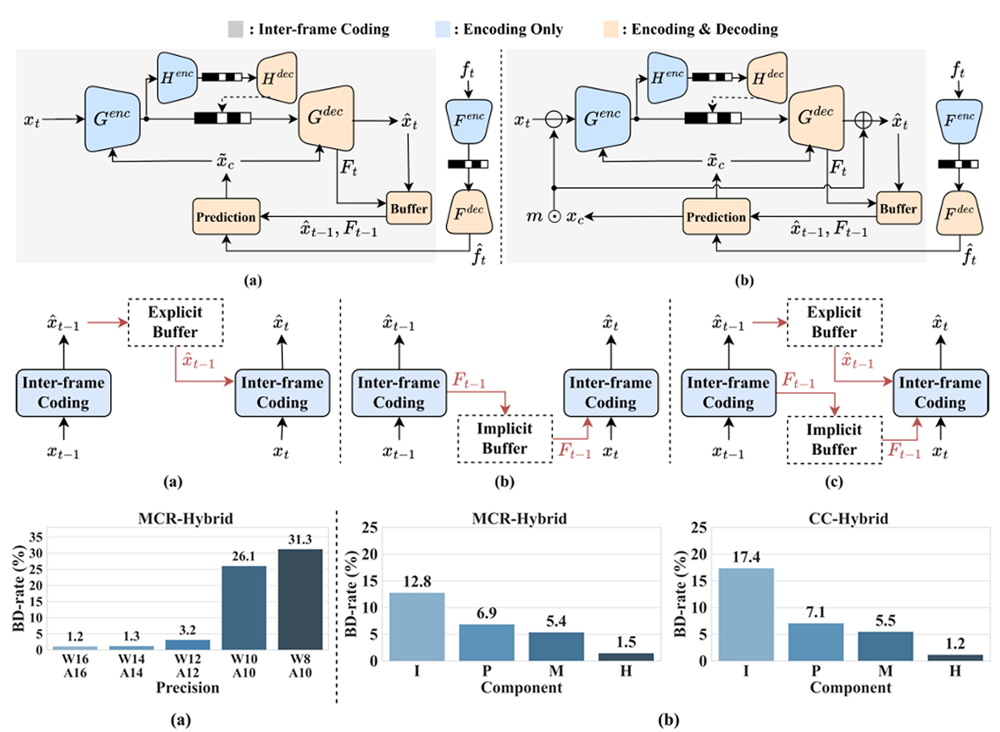
Network Quantization in Neural Video Coding: A Comparative Study Across Coding Frameworks and Temporal Buffering Strategies
IEEE International Conference on Image Processing (ICIP), Sep. 2026.
|
|
Full-precision floating-point neural image and video codecs
pose significant challenges in power consumption, storage require
ments, and cross-platform interoperability, particularly when de
ployed on resource-constrained devices. To address these issues,
network quantization techniques have been extensively studied for
neural image codecs. However, the quantization of neural video
codecs remains largely unexplored. Unlike quantizing neural image
codecs, quantizing neural video codecs requires significantly more
effort. Many coding components operate on temporally correlated
data and often rely on features propagated from previous frames,
introducing additional sensitivity to both cross-platform round-off
errors and network quantization. The major findings emphasize key
trade-offs in video coding, especially the high quantization sensitiv
ity of inter-frame decoding and the effectiveness of mixed-precision
in balancing performance and complexity. This work presents the
first systematic and algorithmic study of quantization effects across
multiple neural video coding frameworks and temporal buffering
strategies. This work offers actionable insights into the future devel
opment of neural video codecs.
|
|
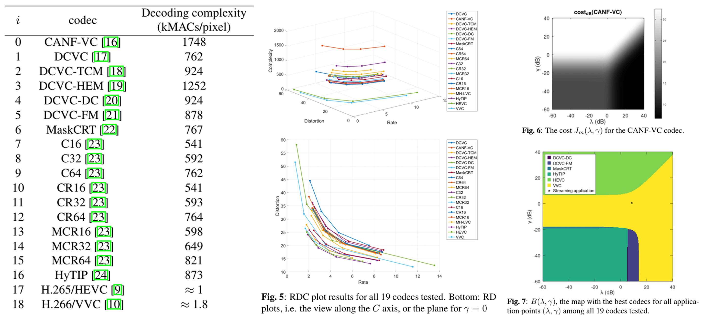
Rate-Distortion-Complexity Analysis of Parametric Video Codecs
IEEE International Conference on Image Processing (ICIP), Sep. 2026.
|
|
A parametric video coder-decoder (codec) is one where the
performance is represented by a curve either in the plane or
in higher-dimensional space. We propose a process for com
paring parametric video compression systems through a rate
distortion-complexity (RDC) analysis. We discuss the pop
ular 2D Bjontegaard delta metric and other correspondence
based curve-comparison methods, and their extensions to al
low comparisons in RDC space. We argue that all these met
rics in 3D may be ineffective and we propose an absolute cost
for each RDC curve. Such a metric involves the computation
of Lagrangian costs of RDC points in the form D+λR+γC,
and some integration. We also argue that any application may
be associated to a (λ,γ) pair. Several state-of-the-art neural
video codecs were compared, using the proposed metrics for
the entire (λ,γ) plane for each codec through all the available
dataset. We could, then, establish the best codecs for each ap
plication, i.e. for each (λ,γ) pair. Tests with 19 codecs (17
neural and 2 conventional video codecs) revealed that only 6
codecs would be of interest, each best suited for a range of
applications.
|
|
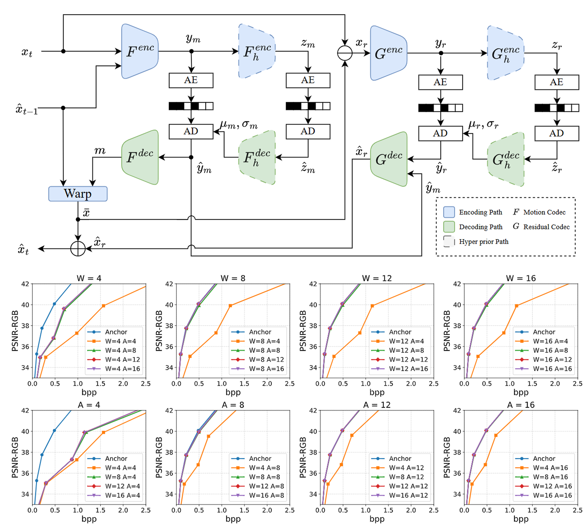
On the Impact of Quantization Precision and Calibration Settings Applied to the SSF Neural Video Decoder
Journal of Integrated Circuits and Systems, 2026.
|
|
Neural video codecs have recently achieved state-of-the-art performance, but their reliance on floating-pointarithmetic introduces cross-platform inconsistencies. In thiswork, we present an extended investigation of post-trainingquantization (PTQ) applied to the hyper prior decoding pathin the Scale-Space Flow (SSF) codec, focusing on its role inensuring cross-platform consistency while maintaining com-pression efficiency.We systematically evaluate the impactof different quantization bit-depths (4-, 8-, 12-, and 16-bitintegers), calibration configurations (crop sizes and datasetsizes), and temporal test scenarios (short and long P-framechains). The results show that aggressive quantization (INT4)severely degrades rate–distortion (RD) performance, whereasINT8 achieves a favorable trade-off with compression effi-ciency penalties below 7%, measured in terms of BjontegaardDelta-Rate (BD-Rate). Furthermore, INT12 precision is suffi-cient to match the FP32 baseline with virtually no loss. Cal-ibration analysis reveals that high-precision quantization isonly marginally affected by dataset size and resolution, whilelower-precision scenarios exhibit less predictable behavior. Fi-nally, an estimation of energy consumption for a dedicatedhardware design indicates that quantization can reduce en-ergy consumption by up to 84% compared to the FP32 anchormodel, while preserving near-floating-point efficiency.
|
|
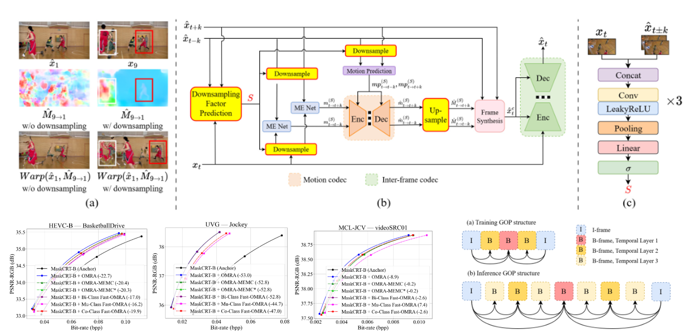
Neural B-Frame Coding: Tackling Domain Shift Issues with Lightweight Online Motion Resolution Adaptation
IEEE Transactions on Circuits and Systems II: Express Briefs (TCSII), 2025.
|
|
Learned B-frame codecs with hierarchical temporal prediction often encounter the domain-shift issue due to mismatches between the Group-of-Pictures (GOP) sizes for training and testing, leading to inaccurate motion estimates, particularly for large motion. A common solution is to turn large motion into small motion by downsampling video frames during motion estimation. However, determining the optimal downsampling factor typically requires costly rate-distortion optimization. This work introduces lightweight classifiers to predict downsampling factors. These classifiers leverage simple state signals from current and reference frames to balance rate-distortion performance with computational cost. Three variants are proposed: (1) a binary classifier (Bi-Class) trained with Focal Loss to choose between high and low resolutions, (2) a multi-class classifier (Mu-Class) trained with novel soft labels based on rate-distortion costs, and (3) a co-class approach (Co-Class) that combines the predictive capability of the multi-class classifier with the selective search of the binary classifier. All classifier methods can work seamlessly with existing B-frame codecs without requiring codec retraining. Experimental results show that they achieve coding performance comparable to exhaustive search methods while significantly reducing computational complexity. The code is available at:
https://github.com/NYCU-MAPL/Fast-OMRA.
|
|
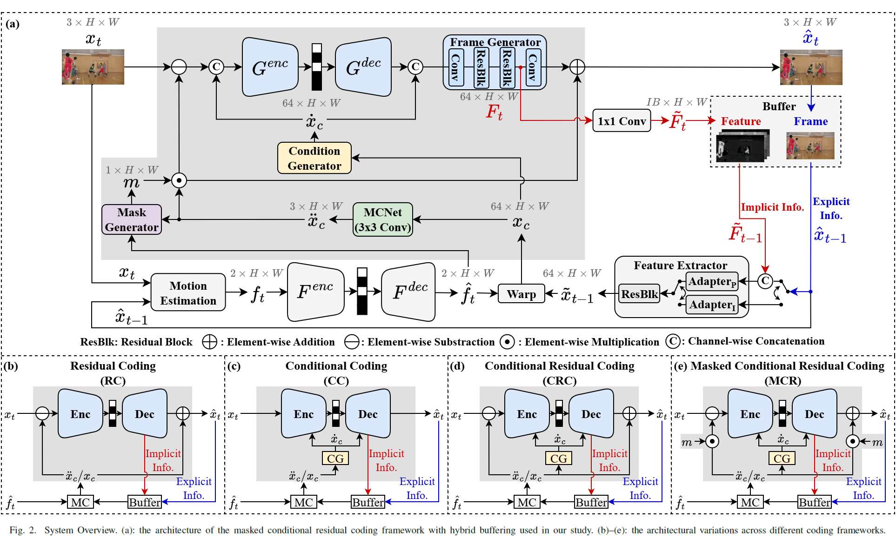 A Cross-Framework Study of Temporal Information
Buffering Strategies for Learned Video Compression
Picture Coding Symposium (PCS), Dec. 2025.
|
|
Recent advances in learned video codecs have demonstrated remarkable compression efficiency. Two fundamental
design aspects are critical: the choice of inter-frame coding framework and the temporal information
propagation strategy. Inter-frame coding frameworks include residual coding, conditional coding, conditional
residual coding, and masked conditional residual coding, each with distinct mechanisms for utilizing temporal
predictions. Temporal propagation methods can be categorized as explicit, implicit, or hybrid buffering,
differing in how past decoded information is stored and used. However, a comprehensive study covering all
possible combinations is still lacking. This work systematically evaluates the impact of explicit, implicit,
and hybrid buffering on coding performance across four inter-frame coding frameworks under a unified
experimental setup, providing a thorough understanding of their effectiveness.
|
|
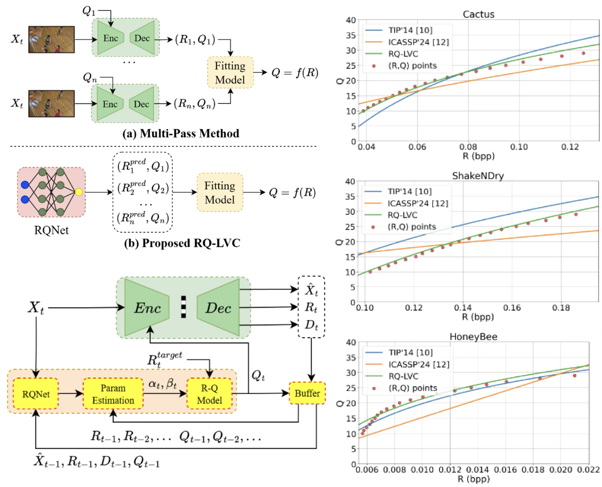 A Rate-Quality Model for Learned Video Coding
Asia-Pacific Signal and Information Processing Association (APSIPA) Annual Summit and Conference, Oct. 2025.
|
|
Learned video coding (LVC) has recently achieved superior coding performance. In this paper, we model the rate-quality (R-Q) relationship for learned video coding by a parametric function. We learn a neural network, termed RQNet, to characterize the relationship between the bitrate and quality level according to video content and coding context. The predicted (R,Q) results are further integrated with those from previously coded frames using the least-squares method to determine the parameters of our R-Q model on-the-fly. Compared to the conventional approaches, our method accurately estimates the R-Q relationship, enabling the online adaptation of model parameters to enhance both flexibility and precision. Experimental results show that our R-Q model achieves significantly smaller bitrate deviations than the baseline method on commonly used datasets with minimal additional complexity.
|
|
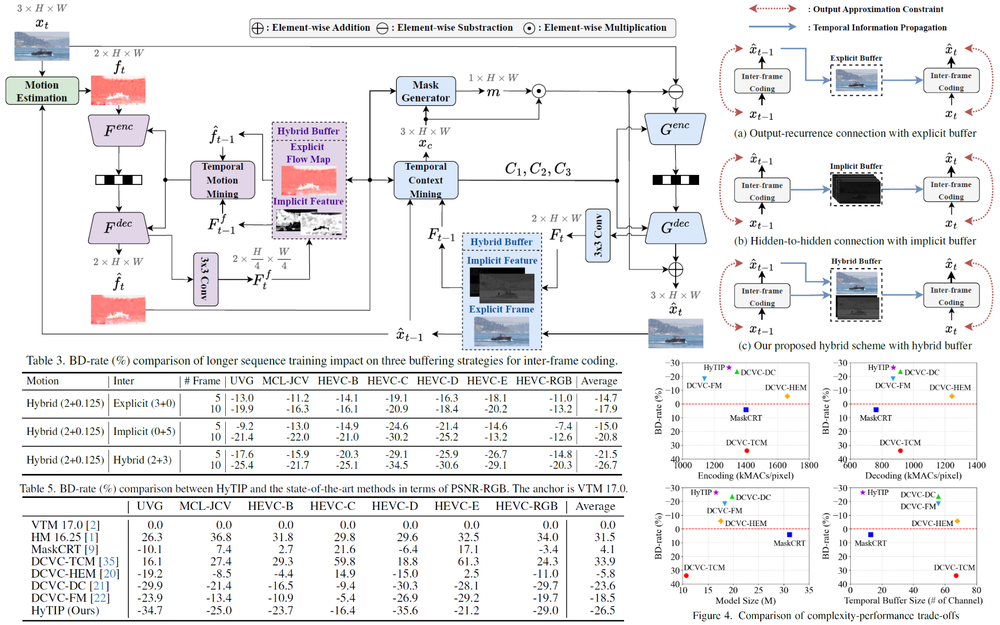 HyTIP: Hybrid Temporal Information Propagation for
Masked Conditional Residual Video Coding
IEEE International Conference on Computer Vision (ICCV), Oct. 2025.
|
|
Most frame-based learned video codecs can be interpreted as recurrent neural networks (RNNs) propagating
reference information along the temporal dimension. This work revisits the limitations of the current
approaches from an RNN perspective. The output-recurrence methods, which propagate decoded frames, are
intuitive but impose dual constraints on the output decoded frames, leading to suboptimal rate-distortion
performance. In contrast, the hidden-to-hidden connection approaches, which propagate latent features
within the RNN, offer greater flexibility but require large buffer sizes. To address these issues, we
propose HyTIP, a learned video coding framework that combines both mechanisms. Our hybrid buffering
strategy uses explicit decoded frames and a small number of implicit latent features to achieve competitive
coding performance. Experimental results show that our HyTIP outperforms the sole use of either
output-recurrence or hidden-to-hidden approaches. Furthermore, it achieves comparable performance to
state-of-the-art methods but with a much smaller buffer size, and outperforms VTM 17.0 (Low-delay B)
in terms of PSNR-RGB and MS-SSIM-RGB. The source code of HyTIP is available at
https://github.com/NYCU-MAPL/HyTIP.
|
|
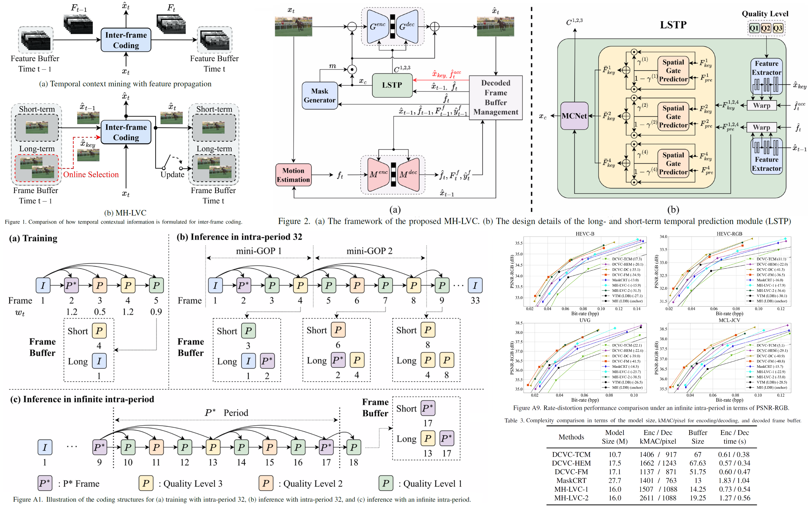 MH-LVC: Multi-Hypothesis Temporal Prediction for
Learned Conditional Residual Video Coding
IEEE International Conference on Computer Vision (ICCV), Oct. 2025.
|
|
This work, termed MH-LVC, presents a multi-hypothesis temporal prediction scheme that employs long- and
short-term reference frames in a conditional residual video coding framework. Recent temporal context mining
approaches to conditional video coding offer superior coding performance. However, the need to store and access
a large amount of implicit contextual information extracted from past decoded frames in decoding a video frame
poses a challenge due to excessive memory access. Our MH-LVC overcomes this issue by storing multiple long-
and short-term reference frames but limiting the number of reference frames used at a time for temporal
prediction to two. Our decoded frame buffer management allows the encoder to flexibly utilize the long-term key
frames to mitigate temporal cascading errors and the short-term reference frames to minimize prediction errors.
Moreover, our buffering scheme enables the temporal prediction structure to be adapted to individual input
videos. While this flexibility is common in traditional video codecs, it has not been fully explored for learned
video codecs. Extensive experiments show that the proposed method outperforms VTM-17.0 under the low-delay B
configuration in terms of PSNR-RGB across commonly used test datasets, and performs comparably to the
state-of-the-art learned codecs (e.g. DCVC-FM) while requiring less decoded frame buffer and similar
decoding time.
|
|
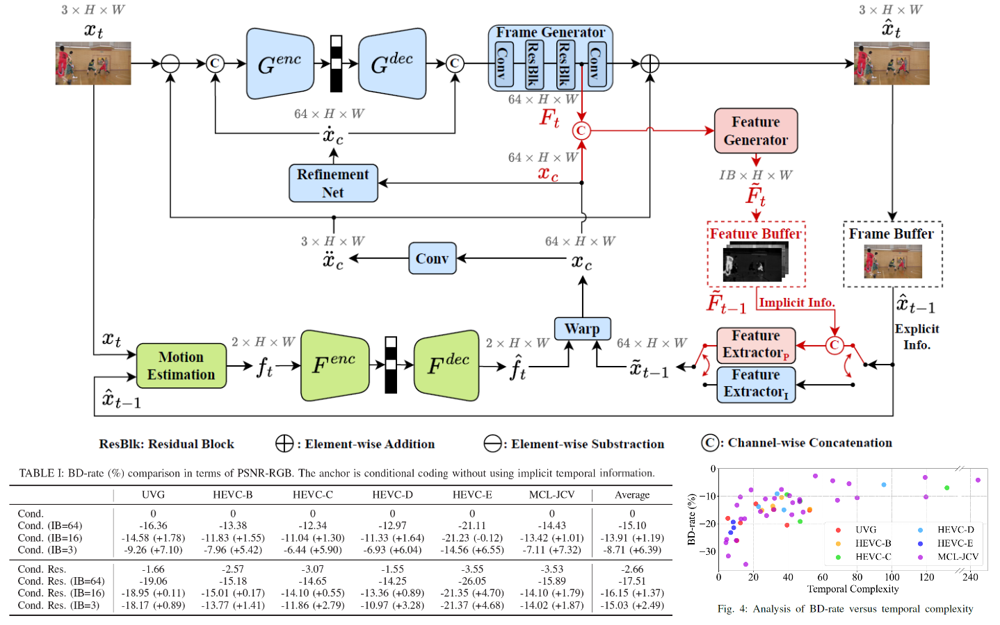 Conditional Residual Coding with Explicit-Implicit
Temporal Buffering for Learned Video Compression
IEEE International Conference on Multimedia and Expo (ICME), June 2025.
|
|
This work proposes a hybrid, explicit-implicit temporal buffering scheme for conditional residual video coding.
Recent conditional coding methods propagate implicit temporal information for inter-frame coding, demonstrating
superior coding performance to those relying exclusively on previously decoded frames (i.e. the explicit temporal
information). However, these methods require substantial memory to store a large number of implicit features.
This work presents a hybrid buffering strategy. For inter-frame coding, it buffers one previously decoded frame
as the explicit temporal reference and a small number of learned features as implicit temporal reference. Our
hybrid buffering scheme for conditional residual coding outperforms the single use of explicit or implicit
information. Moreover, it allows the total buffer size to be reduced to the equivalent of two video frames with
a negligible performance drop on 2K video sequences. The ablation experiment further sheds light on how these
two types of temporal references impact the coding performance.
|
|
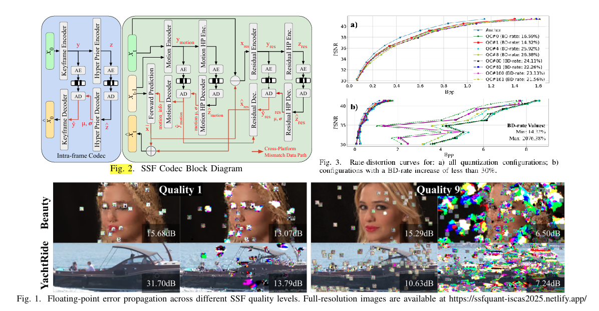 Cross-Platform Neural Video Coding: A Case Study
IEEE International Symposium on Circuits and Systems (ISCAS), May 2025.
|
|
In this paper, we first show that current learning-based video codecs, specifically the SSF codec, are not suitable for real-world applications due to the mismatch between the encoder and decoder caused by floating-point round-off errors. To address this issue, we propose the static quantization of the hyper prior decoding path. The quantization parameters are determined through an exhaustive search of all possible combinations of observers and quantization schemes from PyTorch. For the SSF codec, when encoding and decoding on different machines, the proposed solution effectively mitigates the mismatch issue and enhances compression efficiency results by preventing severe image quality degradation. When encoding and decoding are performed on the same machine, it constrains the average BD-rate increase to 9.93% and 9.02% for UVG and HEVC-B sequences, respectively.
|
|
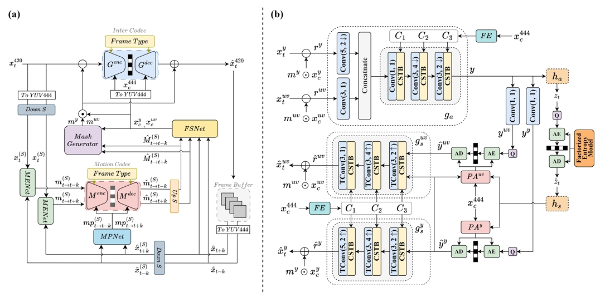 MaskCRT-B: Masked Conditional Residual Transformer for
Learned B-frame Coding
IEEE International Symposium on Circuits and Systems (ISCAS), May 2025.
|
|
This paper proposes a learned hierarchical B-frame coding scheme in response to the Grand Challenge on Neural
Network-based Video Coding at ISCAS 2025. Recently, masked conditional residual coding emerged as an attractive alternative
to the existing inter-frame coding frameworks, including residual coding, conditional coding, and conditional residual coding. In
this work, we propose masked conditional residual B-frame coding, termed MaskCRT-B, for YUV420 videos. It features
an asymmetric codec architecture that includes one joint YUV encoder and two separate Y and UV decoders. Moreover, it
incorporates a bi-directional adaptive fusion module that refines the bi-directional feature maps to better tackle the prediction
of the occluded and dis-occluded regions within the input video. MaskCRT-B presents a significant advancement in learned B
frame coding, outperforming the state-of-the-art conditional B frame codec from the Grand Challenge at ISCAS 2024.
|
|
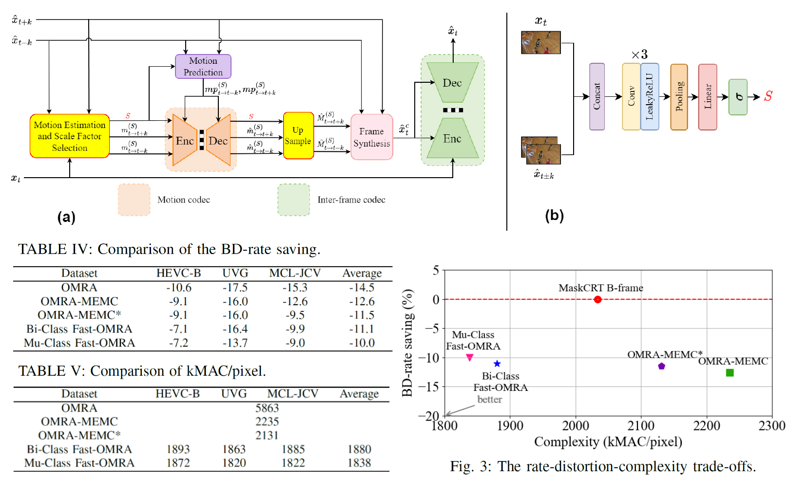 Fast-OMRA: Fast Online Motion Resolution Adaptation for
Neural B-Frame Coding
IEEE Latin American Symposium on Circuits and Systems (LASCAS), Feb. 2025.
|
|
Most learned B-frame codecs with hierarchical temporal prediction suffer from
the domain shift issue caused by the discrepancy in the Group-of-Pictures (GOP)
size used for training and test. As such, the motion estimation network may fail
to predict large motion properly. One effective strategy to mitigate this domain
shift issue is to downsample video frames for motion estimation. However, finding
the optimal downsampling factor involves a time-consuming rate-distortion
optimization process. This work introduces lightweight classifiers to determine
the downsampling factor. To strike a good rate-distortion-complexity trade-off,
our classifiers observe simple state signals, including only the coding and reference
frames, to predict the best downsampling factor. We present two variants that adopt
binary and multi-class classifiers, respectively. The binary classifier adopts
the Focal Loss for training, classifying between motion estimation at high and
low resolutions. Our multi-class classifier is trained with novel soft labels
incorporating the knowledge of the rate-distortion costs of different downsampling
factors. Both variants operate as add-on modules without the need to re-train the
B-frame codec. Experimental results confirm that they achieve comparable coding
performance to the brute-force search methods while greatly reducing computational
complexity.
|
|
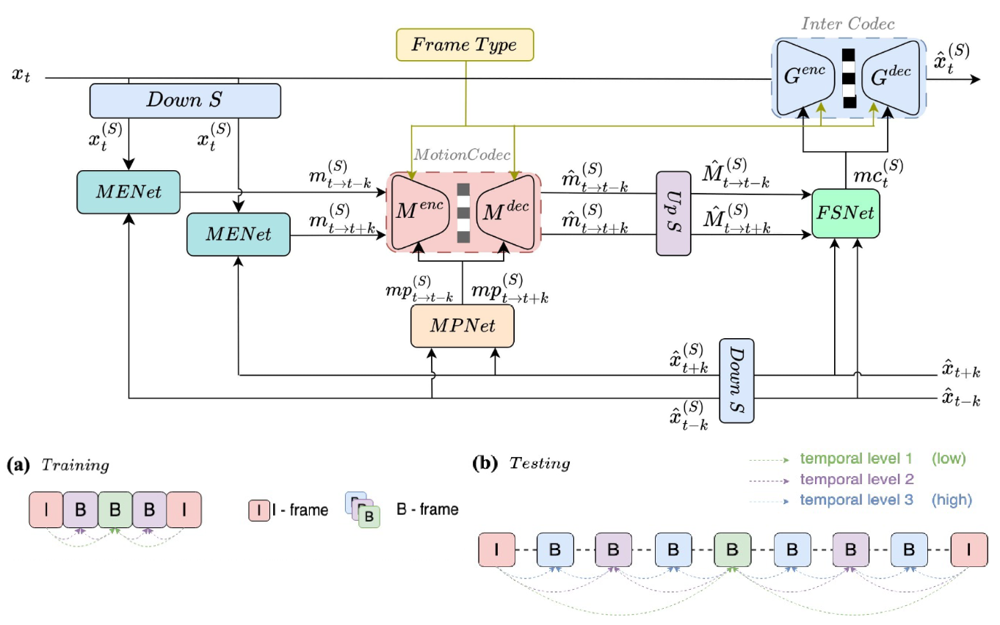 OMRA: Online Motion Resolution Adaptation to Remedy Domain Shift in Learned Hierarchical B-frame Coding
IEEE International Conference on Image Processing (ICIP), Oct. 2024.
|
|
Learned hierarchical B-frame coding aims to leverage bidirectional reference
frames for better coding efficiency. However, the domain shift between training
and test scenarios due to dataset limitations poses a challenge. This issue arises
from training the codec with small groups of pictures (GOP) but testing it on
large GOPs. Specifically, the motion estimation network, when trained on small
GOPs, is unable to handle large motion at test time, incurring a negative impact
on compression performance. To mitigate the domain shift, we present an online
motion resolution adaptation (OMRA) method. It adapts the spatial resolution of
video frames on a per-frame basis to suit the capability of the motion estimation
network in a pre-trained B-frame codec. Our OMRA is an online, inference technique.
It need not re-train the codec and is readily applicable to existing B-frame codecs
that adopt hierarchical bi-directional prediction. Experimental results show that
OMRA significantly enhances the compression performance of two state-of-the-art
learned B-frame codecs on commonly used datasets.
|
|
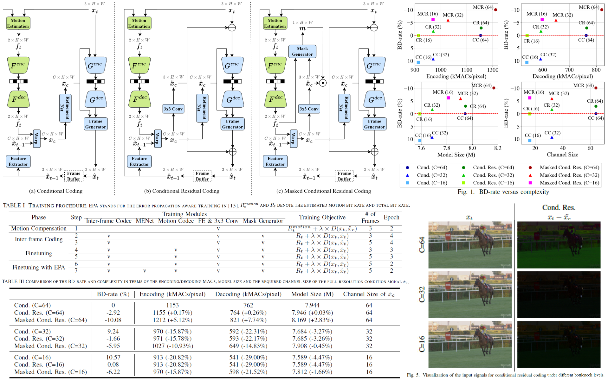 On the Rate-Distortion-Complexity Trade-offs of Neural Video Coding
IEEE International Workshop on Multimedia Signal Processing (MMSP), Oct. 2024.
|
|
This paper aims to delve into the rate-distortioncomplexity trade-offs
of modern neural video coding. Recent years have witnessed much research
effort being focused on exploring the full potential of neural video coding.
Conditional autoencoders have emerged as the mainstream approach to efficient
neural video coding. The central theme of conditional autoencoders is to leverage
both spatial and temporal information for better conditional coding. However,
a recent study indicates that conditional coding may suffer from information
bottlenecks, potentially performing worse than traditional residual coding. To address
this issue, recent conditional coding methods incorporate a large number
of high-resolution features as the condition signal, leading to a considerable
increase in the number of multiply-accumulate operations, memory footprint,
and model size. Taking DCVC as the common code base, we investigate how the
newly proposed conditional residual coding, an emerging new school of thought,
and its variants may strike a better balance among rate, distortion,
and complexity.
|
|
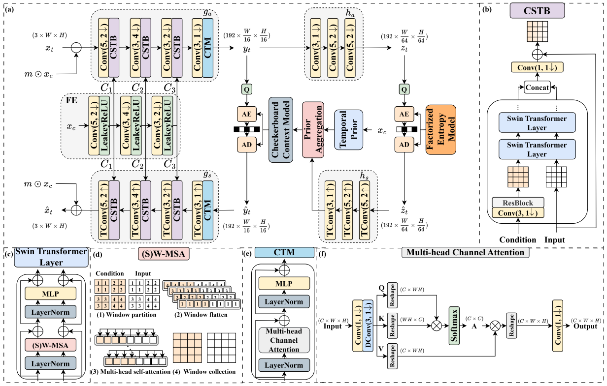 MaskCRT: Masked Conditional Residual Transformer for
Learned Video Compression
IEEE Transactions on Circuits and Systems for Video Technology (TCSVT), 2024.
|
|
Conditional coding has lately emerged as the mainstream
approach to learned video compression. However, a recent
study shows that it may perform worse than residual coding when
the information bottleneck arises. Conditional residual coding
was thus proposed, creating a new school of thought to improve
on conditional coding. Notably, conditional residual coding relies
heavily on the assumption that the residual frame has a lower
entropy rate than that of the intra frame. Recognizing that this
assumption is not always true due to dis-occlusion phenomena
or unreliable motion estimates, we propose a masked conditional
residual coding scheme. It learns a soft mask to form a hybrid
of conditional coding and conditional residual coding in a pixel
adaptive manner. We introduce a Transformer-based conditional
autoencoder. Several strategies are investigated with regard to
how to condition a Transformer-based autoencoder for interframe
coding, a topic that is largely under-explored. Additionally,
we propose a channel transform module (CTM) to decorrelate
the image latents along the channel dimension, with the aim of
using the simple hyperprior to approach similar compression
performance to the channel-wise autoregressive model. Experimental
results confirm the superiority of our masked conditional
residual transformer (termed MaskCRT) to both conditional
coding and conditional residual coding. On commonly used
datasets, MaskCRT shows comparable BD-rate results to VTM-17.0
under the low delay P configuration in terms of PSNR-RGB
and outperforms VTM-17.0 in terms of MS-SSIM-RGB. It also
opens up a new research direction for advancing learned video
compression.
|
|
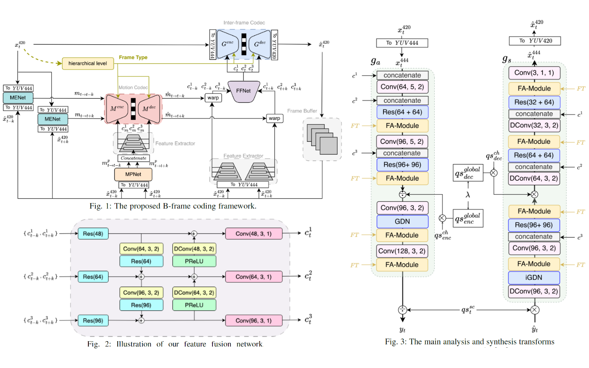 Conditional Variational Autoencoders for Hierarchical B-Frame Coding
IEEE International Symposium on Circuits and Systems (ISCAS), May 2024.
|
|
In response to the Grand Challenge on Neural Network-based Video Coding at ISCAS
2024, this paper proposes a learned hierarchical B-frame coding scheme. Most learned
video codecs concentrate on P-frame coding for the RGB content, while B-frame coding
for the YUV420 content remains largely under-explored. Some early works explore
Conditional Augmented Normalizing Flows (CANF) for B-frame coding. However, they
suffer from high computational complexity because of stacking multiple variational
autoencoders (VAE) and using separate Y and UV codecs. This work aims to develop
a lightweight VAE-based B-frame codec in a conditional coding framework. It
features (1) extracting multi-scale features for conditional motion and inter-frame
coding, (2) performing frame-type adaptive coding for better bit allocation, and
(3) a lightweight conditional VAE backbone that encodes YUV420 content by a
simple conversion into YUV444 content for joint Y and UV coding. Experimental
results confirms its superior compression performance to the CANF-based B-frame
codec from the last year's challenge while having much reduced complexity.
|
|
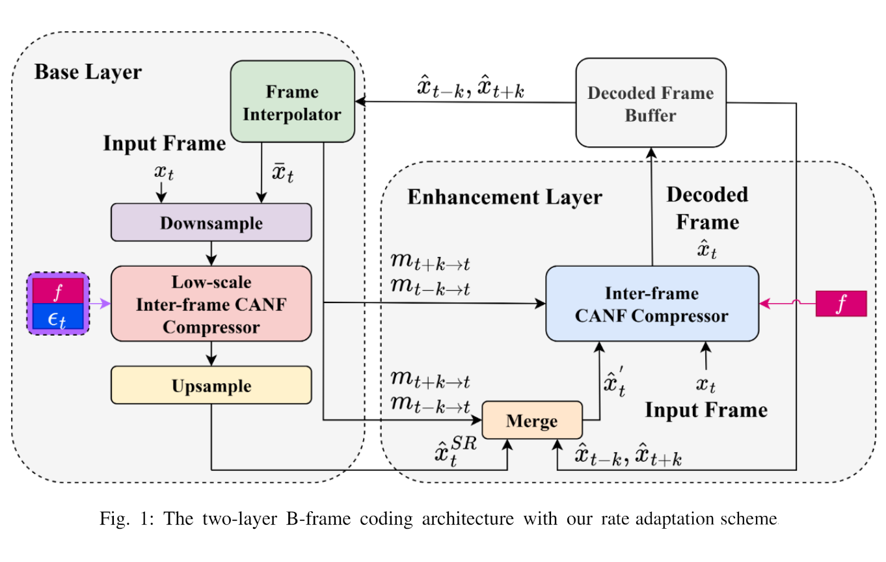 Rate Adaptation for Learned Two-layer B-frame Coding
without Signaling Motion Information
IEEE International Conference on Visual Communications and Image Processing (VCIP), Dec. 2023.
|
|
This paper explores the potential of a learned twolayer B-frame codec, known
as TLZMC. TLZMC is one of the few early attempts that deviate from the
hybrid-based coding architecture by skipping motion coding. With TLZMC,
a low-resolution base layer is utilized to encode temporally unpredictable
information. We address the question of whether adapting the base-layer
bitrate can achieve better rate-distortion performance. We apply the
feature map modulation technique to enable per-frame bitrate adaptation
of the base layer. We then propose and compare three online search
strategies for determining the base-layer rate parameter: per-level
brute-force search, per-level greedy search, and per-frame greedy search.
Experimental results show that our top-performing search strategy
achieves 0.6%-15.8% Bjøntegaard-Delta rate savings over TLZMC.
|
|
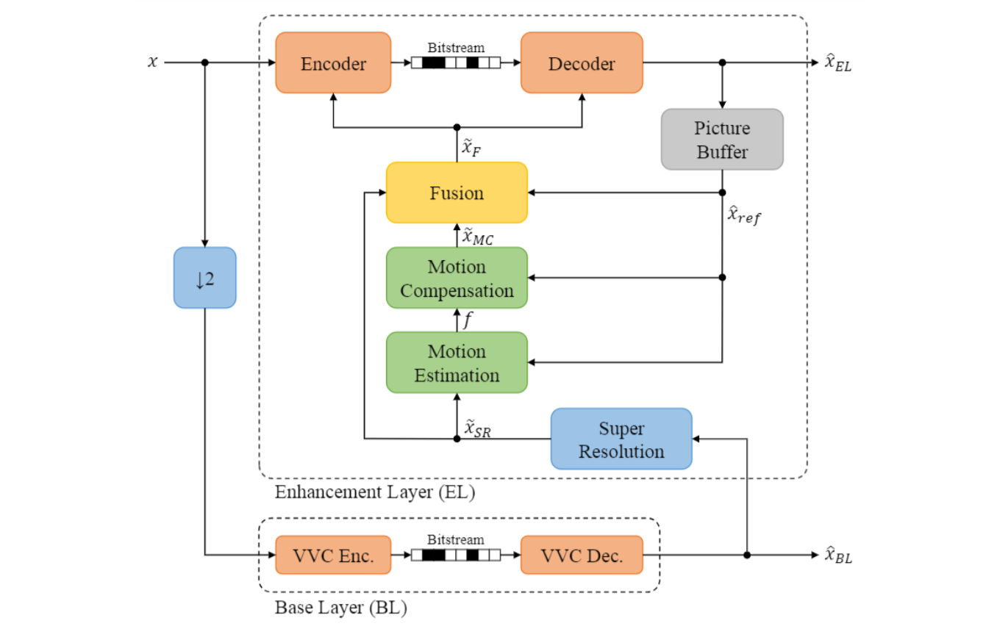 Learning-Based Scalable Video Coding with Spatial
and Temporal Prediction
IEEE International Conference on Visual Communications and Image Processing (VCIP), Dec. 2023.
|
|
In this work, we propose a hybrid learning-based method for layered
spatial scalability. Our framework consists of a base layer (BL),
which encodes a spatially downsampled representation of the input
video using Versatile Video Coding (VVC), and a learning-based
enhancement layer (EL), which conditionally encodes the original
video signal. The EL is conditioned by two fused prediction
signals: a spatial inter-layer prediction signal, that is
generated by spatially upsampling the output of the BL using
super-resolution, and a temporal inter-frame prediction
signal, that is generated by decoder-side motion compensation
without signaling any motion vectors. We show that our
method outperforms LCEVC and has comparable performance to
fullresolution VVC for high-resolution content, while
still offering scalability.
|
|
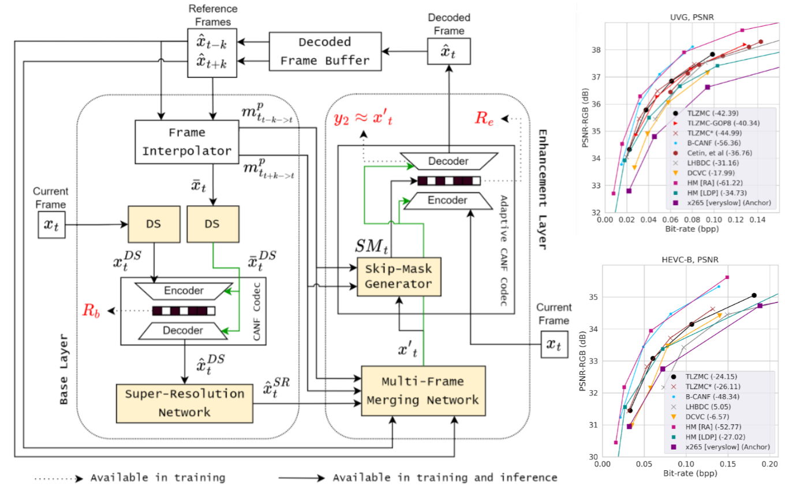 Hierarchical B-frame Video Compression Using
Two-layer CANF without Motion Coding
IEEE Conference on Computer Vision and Pattern Recognition (CVPR), June 2023.
|
|
Typical video compression systems consist of two main modules: motion coding
and residual coding. This general architecture is adopted by classical
coding schemes (such as international standards H.265 and H.266) and deep
learning-based coding schemes. We propose a novel Bframe coding architecture
based on two-layer Conditional Augmented Normalization Flows (CANF).
It has the striking feature of not transmitting any motion information.
Our proposed idea of video compression without motion coding offers a
new direction for learned video coding. Our base layer is a low-resolution
image compressor that replaces the full-resolution motion compressor.
The low-resolution coded image is merged with the warped high-resolution
images to generate a high-quality image as a conditioning signal for
the enhancement-layer image coding in full resolution. One advantage
of this architecture is significantly reduced computationa
l complexity due to eliminating the motion information compressor
. In addition, we adopt a skip-mode coding technique to reduce the
transmitted latent samples. The rate-distortion performance of our
scheme is slightly lower than that of the state-of-the-art learned
B-frame coding scheme, B-CANF, but outperforms other learned
B-frame coding schemes. However, compared to B-CANF, our scheme
saves 45% of multiply-accumulate operations (MACs) for encoding
and 27% of MACs for decoding. The code is available at
https://nycu-clab.github.io.
|
|
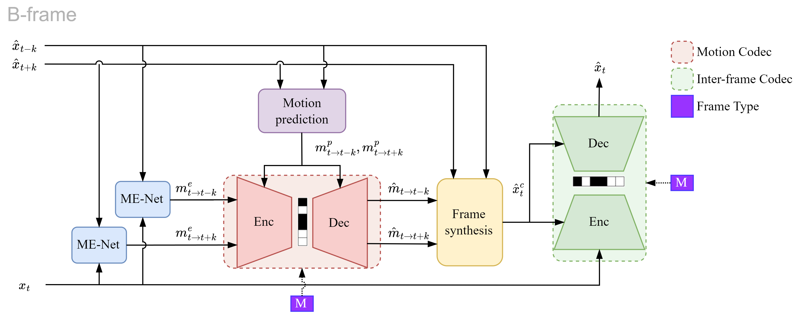 B-CANF: Adaptive B-frame Coding with Conditional
Augmented Normalizing Flows
IEEE Transactions on Circuits and Systems for Video Technology (TCSVT), 2023.
|
|
Over the past few years, learning-based video compression has become an active research
area. However, most works focus on P-frame coding. Learned B-frame coding is under-explored
and more challenging. This work introduces a novel B-frame coding framework, termed B-CANF,
that exploits conditional augmented normalizing flows for B-frame coding. B-CANF additionally
features two novel elements: frame-type adaptive coding and B*-frames. Our frame-type adaptive
coding learns better bit allocation for hierarchical B-frame coding by dynamically adapting
the feature distributions according to the B-frame type. Our B*-frames allow greater
flexibility in specifying the group-of-pictures (GOP) structure by reusing the B-frame codec
to mimic P-frame coding, without the need for an additional, separate P-frame codec. On
commonly used datasets, B-CANF achieves the state-of-the-art compression performance as
compared to the other learned B-frame codecs.
|
|
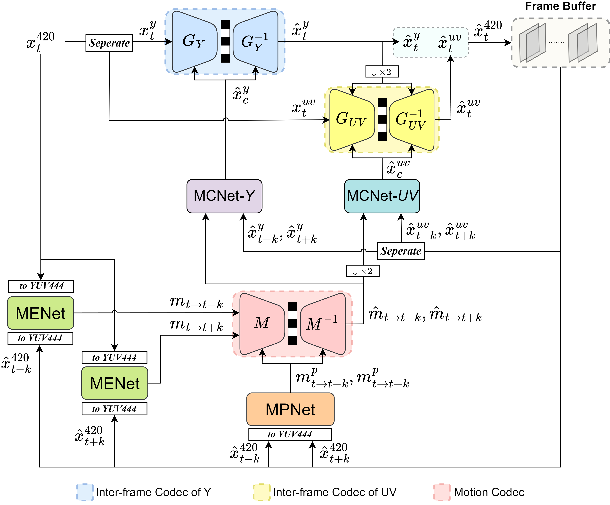 Learned Hierarchical B-frame Coding with
Adaptive Feature Modulation for YUV 4:2:0 Content
IEEE International Symposium on Circuits and Systems (ISCAS), May 2023.
|
|
This paper introduces a learned hierarchical Bframe coding scheme in response to the
Grand Challenge on Neural Network-based Video Coding at ISCAS 2023. We address specifically
three issues, including (1) B-frame coding, (2) YUV 4:2:0 coding, and (3) content-adaptive
variable-rate coding with only one single model. Most learned video codecs operate internally
in the RGB domain for P-frame coding. Bframe coding for YUV 4:2:0 content is largely
under-explored. In addition, while there have been prior works on variable-rate coding with
conditional convolution, most of them fail to consider the content information. We build our
scheme on conditional augmented normalized flows (CANF). It features conditional motion and
inter-frame codecs for efficient B-frame coding. To cope with YUV 4:2:0 content, two
conditional inter-frame codecs are used to process the Y and UV components separately, with
the coding of the UV components conditioned additionally on the Y component. Moreover, we
introduce adaptive feature modulation in every convolutional layer, taking into account both
the content information and the coding levels of B-frames to achieve contentadaptive
variable-rate coding. Experimental results show that our model outperforms x265 and the winner
of last year's challenge on commonly used datasets in terms of PSNR-YUV.
|
|
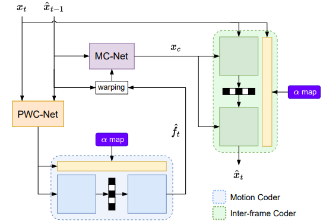 Content-adaptive Motion Rate Adaption for
Learned Video Compression
Picture Coding Symposium (PCS), Dec. 2022.
|
|
This paper introduces an online motion rate adaptation scheme for learned
video compression, with the aim of
achieving content-adaptive coding on individual test sequences
to mitigate the domain gap between training and test data. It
features a patch-level bit allocation map, termed the α-map, to
trade off between the bit rates for motion and inter-frame coding
in a spatially-adaptive manner. We optimize the α-map through
an online back-propagation scheme at inference time. Moreover,
we incorporate a look-ahead mechanism to consider its impact
on future frames. Extensive experimental results confirm that
the proposed scheme, when integrated into a conditional learned
video codec, is able to adapt motion bit rate effectively, showing
much improved rate-distortion performance particularly on test
sequences with complicated motion characteristics.
Index Terms—content-adaptive learned video compression,
conditional inter-frame coding, bit allocation.
|
|
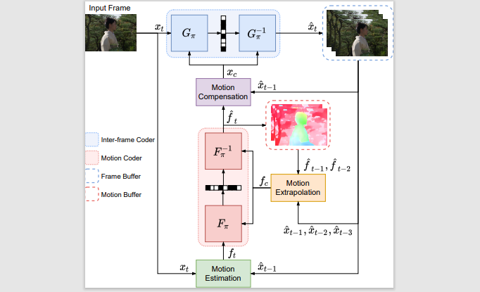 CANF-VC: Conditional Augmented Normalizing Flows for
Video Compression
European Conference on Computer Vision (ECCV), Oct.
2022.
|
|
This paper presents an end-to-end learning-based video compression system,
termed CANF-VC, based on conditional augmented normalizing flows (ANF).
Most learned video compression systems adopt the same hybrid-based coding
architecture as
the traditional codecs. Recent research on conditional coding has shown the
sub-optimality
of the hybrid-based coding and opens up opportunities for deep generative models
to take
a key role in creating new coding frameworks. CANF-VC represents a new attempt
that
leverages the conditional ANF to learn a video generative model for conditional
inter-frame coding.
We choose ANF because it is a special type of generative model, which includes
variational
autoencoder as a special case and is able to achieve better expressiveness.
CANF-VC also extends the idea of conditional coding to motion coding, forming a
purely conditional coding framework. Extensive experimental results on commonly
used datasets confirm the superiority of CANF-VC to the state-of-the-art
methods.
|
|
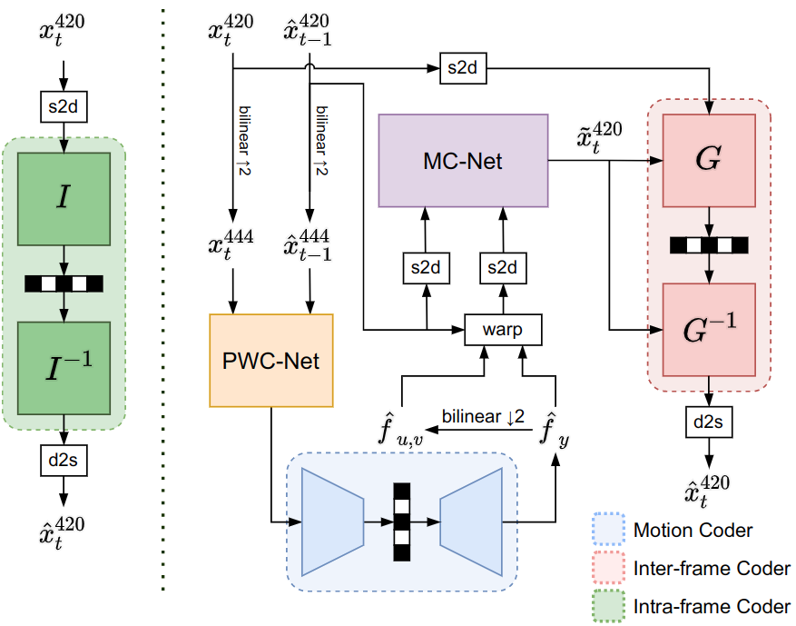 Learned Video Compression for YUV 4:2:0 Content Using
Flow-Based Conditional Inter-Frame Coding
IEEE International Symposium on Circuits and Systems
(ISCAS), May. 2022.
|
|
This paper proposes a learning-based video compression framework that applies a
conditional flow-based model for inter-frame coding and takes YUV 4:2:0 as the
input format. Most learning-based video compression models use predictive coding
and directly encode the residual signal, which is considered a sub-optimal
solution.
In addition, those models usually only operate on RGB, which is also regarded as
an inefficient format. Furthermore, they require multiple models to fit on
different
bit rates. To solve these issues, we introduce a conditional flow-based video
compression
framework to improve the coding efficiency. To adapt to YUV 4:2:0 format, we
incorporate
lossless space-to-depth and depth-to-space transformation in our design. Lastly,
we apply
rate-adaption net on both I-frame and P-frame coder to achieve variable-rate
coding and
can further be extended to rate control applications. Our experimental results
show comparable
or better performance against x265 for UVG and MCL-JCV common test datasets in
terms of PSNR-YUV.
|
|
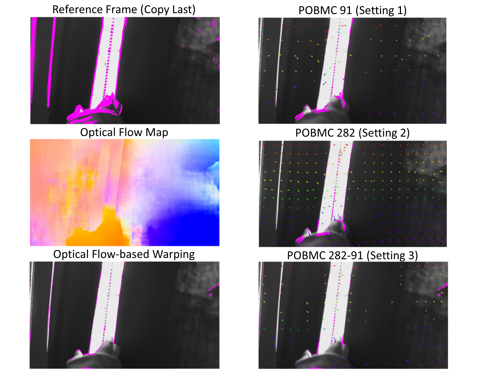 P-frame Coding Proposal by NCTU: Parametric Video
Prediction through Backprop-based Motion Estimation
IEEE Conference on Computer Vision and Pattern
Recognition (CVPR) Workshops, Jun. 2020.
|
|
This paper presents a parametric video prediction
scheme with backprop-based motion estimation, in response
to the CLIC challenge on P-frame compression. Recognizing
that most learning-based video codecs rely on optical
flow-based temporal prediction and suffer from having to
signal a large amount of motion information, we propose
to perform parametric overlapped block motion compensation
on a sparse motion field. In forming this sparse motion
field, we conduct the steepest descent algorithm on a loss
function for identifying critical pixels, of which the motion
vectors are communicated to the decoder. Moreover, we introduce
a critical pixel dropout mechanism to strike a good
balance between motion overhead and prediction quality.
Compression results with HEVC-based residual coding on
CLIC validation sequences show that our parametric video
prediction achieves higher PSNR and MS-SSIM than optical
flow-based warping. Moreover, our critical pixel dropout
mechanism is found beneficial in terms of rate-distortion
performance. Our scheme offers the potential for working
with learned residual coding.
|

ADAPT: Any-Codec Diffusion-Based Adaptation for Per-Image Perception-Distortion Trade-Off
IEEE International Conference on Image Processing (ICIP), Sep. 2026.
|
|
Learned image compression faces a fundamental dilemma between
pixel fidelity and perceptual realism. Existing perception-distortion
(P-D) controllable frameworks are restricted by retraining costs and
architecture dependencies. We propose ADAPT, a training-free
framework that enables P-D control for both learned and traditional
codecs. ADAPT utilizes per-image optimization at the encoder to
estimate parameters based on specific quality preferences. At the
decoder side, a two-stage diffusion process refines the compressed
image: the first stage suppresses compression artifacts to ensure
structural accuracy, while the second stage restores textures through
guided denoising. Experiments show that ADAPT achieves a P-D
balance comparable to specialized state-of-the-art models across
diverse codecs with negligible side-information overhead.
|
|
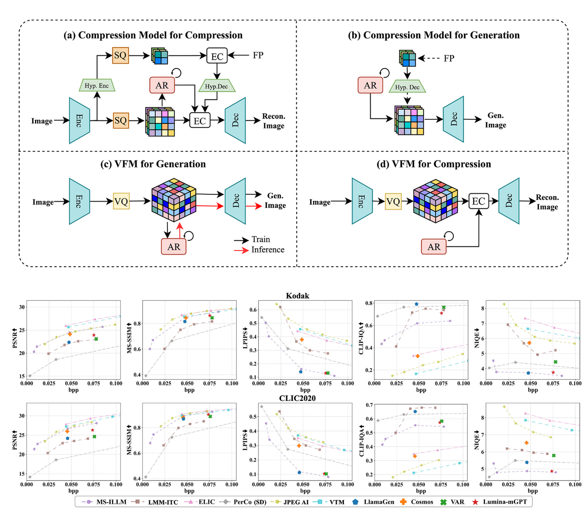 Exploring Autoregressive Vision Foundation Models for
Image Compression
Picture Coding Symposium (PCS), Dec. 2025.
|
|
This work presents the first attempt to repurpose vision foundation models (VFMs) as image codecs, aiming to explore their generation capability for low-rate image compression.
VFMs are widely employed in both conditional and unconditional generation scenarios across diverse downstream tasks, e.g., physical AI applications.
Many VFMs employ an encoder-decoder architecture similar to that of end-to-end learned image codecs and learn an autoregressive (AR) model to perform next-token prediction.
To enable compression, we repurpose the AR model in VFM for entropy coding the next token based on previously coded tokens. This approach deviates from early semantic compression efforts that rely solely on conditional generation for reconstructing input images.
Extensive experiments and analysis are conducted to compare VFM-based codec to current SOTA codecs optimized for distortion or perceptual quality.
Notably, certain pre-trained, general-purpose VFMs demonstrate superior perceptual quality at extremely low bitrates compared to specialized learned image codecs.
This finding paves the way for a promising research direction that leverages VFMs for low-rate, semantically rich image compression.
|
|
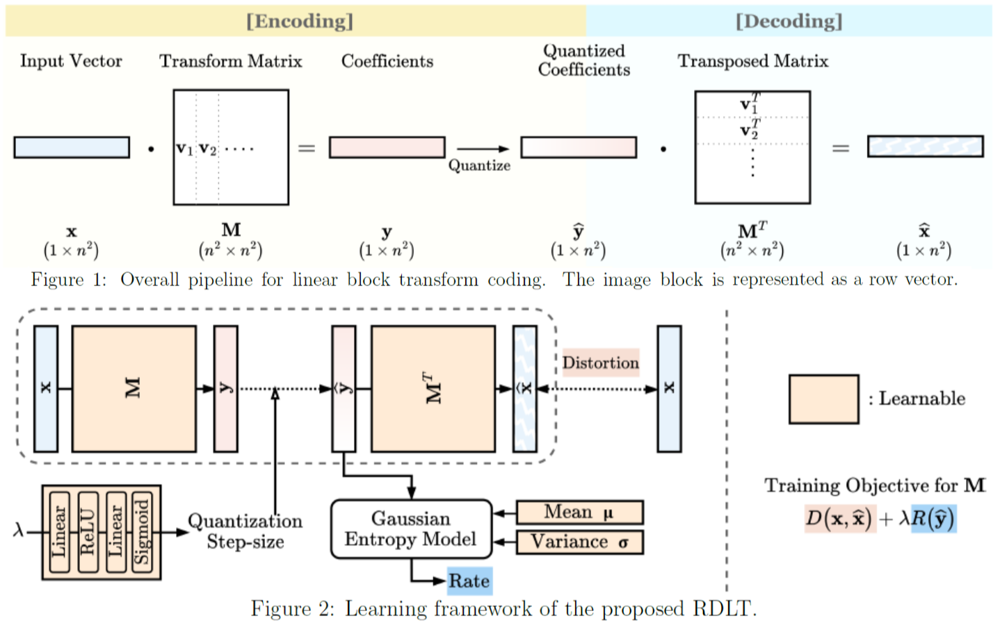 Learning Optimal Linear Block Transform by
Rate Distortion Minimization
Data Compression Conference (DCC), Mar. 2025.
|
|
Linear block transform coding remains a fundamental component of image and
video compression. Although the Discrete Cosine Transform (DCT) is widely
employed in all current compression standards, its sub-optimality has sparked
ongoing research into discovering more efficient alternative transforms even
for fields where it represents a consolidated tool. In this paper, we introduce
a novel linear block transform called the Rate Distortion Learned Transform (RDLT),
a data-driven transform specifically designed to minimize the rate-distortion (RD)
cost when approximating residual blocks. Our approach builds on the latest
end-to-end learned compression frameworks, adopting back-propagation and stochastic
gradient descent for optimization. However, unlike the nonlinear transforms used in
variational autoencoder (VAE)-based methods, the goal is to create a simpler yet
optimal linear block transform, ensuring practical integration into existing image
and video compression standards. Differently from existing data-driven methods that
design transforms based on sample covariance matrices, such as the Karhunen-Loève
Transform (KLT), the proposed RDLT is directly optimized from an RD perspective.
Experimental results show that this transform significantly outperforms the DCT or
other existing data-driven transforms. Additionally, it is shown that when
simulating the integration of our RDLT into a VVC-like image compression framework,
the proposed transform brings substantial improvements. All the code used in our
experiments has been made publicly available
at [1].
|
|
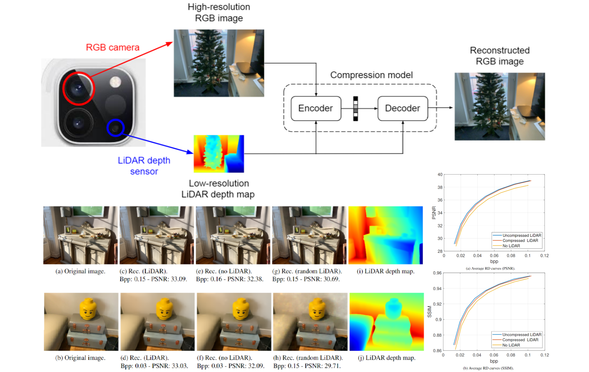 LiDAR Depth Map Guided Image Compression Model
IEEE International Conference on Image Processing (ICIP), Oct. 2024.
|
|
The incorporation of LiDAR technology into some high-end smartphones has unlocked
numerous possibilities across various applications, including photography, image
restoration, augmented reality, and more. In this paper, we introduce a novel
direction that harnesses LiDAR depth maps to enhance the compression of the
corresponding RGB camera images. To the best of our knowledge, this represents
the initial exploration in this particular research direction. Specifically, we
propose a Transformer-based learned image compression system capable of
achieving variable-rate compression using a single model while utilizing the
LiDAR depth map as supplementary information for both the encoding and decoding
processes. Experimental results demonstrate that integrating LiDAR yields
an average PSNR gain of 0.83 dB and an average bitrate reduction of 16% as
compared to its absence.
|
|
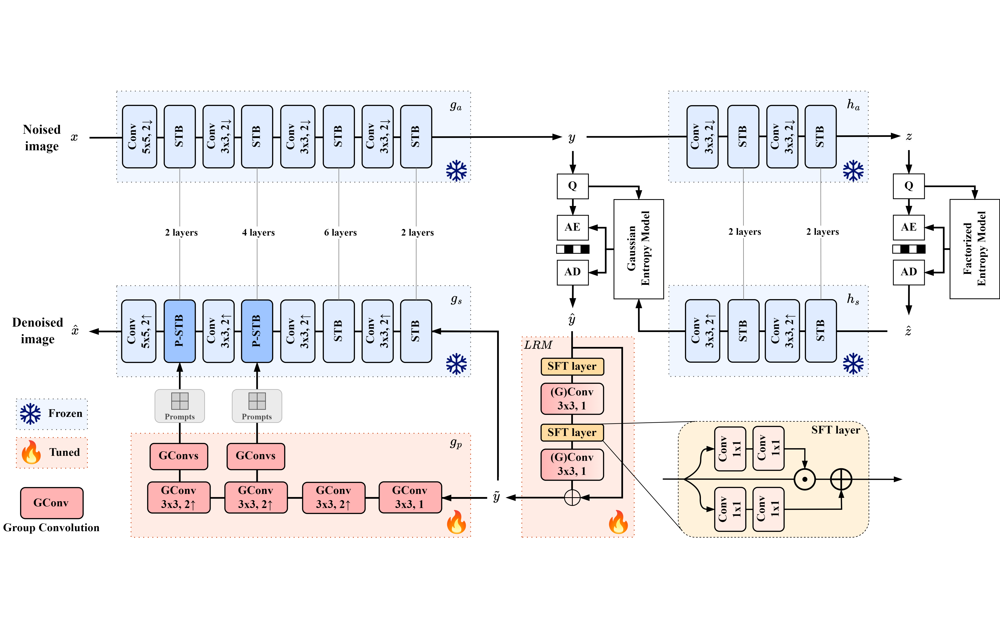 Transformer-based Learned Image Compression for
Joint Decoding and Denoising
Picture Coding Symposium (PCS), June 2024.
|
|
This work introduces a Transformer-based image compression system. It has the
flexibility to switch between the standard image reconstruction and the denoising
reconstruction from a single compressed bitstream. Instead of training separate
decoders for these tasks, we incorporate two add-on modules to adapt a pre-trained
image decoder from performing the standard image reconstruction to joint decoding
and denoising. Our scheme adopts a two-pronged approach. It features a latent
refinement module to refine the latent representation of a noisy input image
for reconstructing a noise-free image. Additionally, it incorporates an
instance-specific prompt generator that adapts the decoding process to improve
on the latent refinement. Experimental results show that our method achieves
a similar level of denoising quality to training a separate decoder for joint
decoding and denoising at the expense of only a modest increase in the
decoder’s model size and computational complexity.
|
|
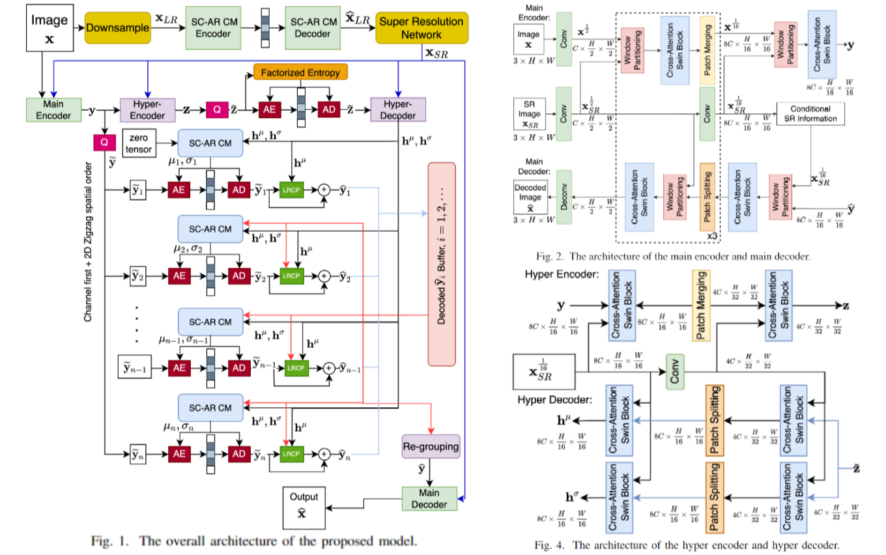 Learning-Based Conditional Image Compression
IEEE International Symposium on Circuits and Systems
(ISCAS), May 2024.
|
|
In recent years, deep learning-based image compression has achieved significant
success. Most schemes adopt an end-to-end trained compression network with a
specifically designed entropy model. Inspired by recent advances in conditional
video coding, in this work, we propose a novel transformer-based conditional coding
paradigm for learned image compression. Our approach first compresses a low-resolution
version of the target image and up-scales the decoded image using an off-the-shelf
super-resolution model. The super-resolved image then serves as the condition to
compress and decompress the target highresolution image. Experiments demonstrate
the superior ratedistortion performance of our approach compared to existing methods.
|
|
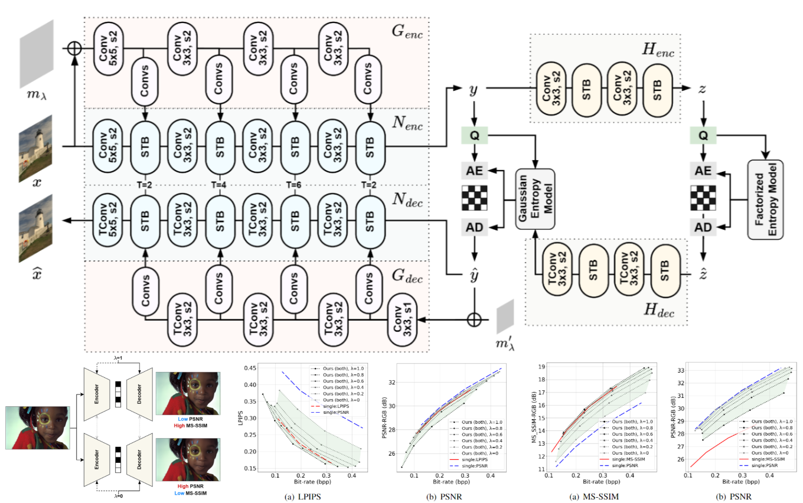 Transformer-based Image Compression with Variable
Image Quality Objectives
Asia-Pacific Signal and Information Processing Association (APSIPA) Annual Summit
and Conference, Oct. 2023.
|
|
This paper presents a Transformer-based image compression system that allows
for a variable image quality objective according to the user's preference.
Optimizing a learned codec for different quality objectives leads to
reconstructed images with varying visual characteristics. Our method
provides the user with the flexibility to choose a trade-off between
two image quality objectives using a single, shared model. Motivated
by the success of prompt-tuning techniques, we introduce prompt
tokens to condition our Transformer-based autoencoder. These prompt
tokens are generated adaptively based on the user's preference and
input image through learning a prompt generation network. Extensive
experiments on commonly used quality metrics demonstrate the
effectiveness of our method in adapting the encoding and/or
decoding processes to a variable quality objective. While
offering the additional flexibility, our proposed method
performs comparably to the single-objective methods in terms
of rate-distortion performance.
|
|
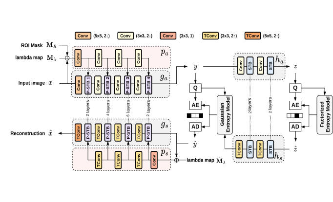 Transformer-based Variable-rate Image Compression With
Region-of-interest Control
IEEE International Conference on Image Processing (ICIP), Oct. 2023.
|
|
This paper proposes a transformer-based learned image compression system. It is
capable of achieving variable-rate compression with a single model while
supporting the regionof-interest (ROI) functionality. Inspired by prompt tuning,
we introduce prompt generation networks to condition the transformer-based
autoencoder of compression. Our prompt generation networks generate content-adaptive
tokens according to the input image, an ROI mask, and a rate parameter. The
separation of the ROI mask and the rate parameter allows an intuitive way to
achieve variable-rate and ROI coding simultaneously. Extensive experiments
validate the effectiveness of our proposed method and confirm its superiority over
the other competing methods.
|
|
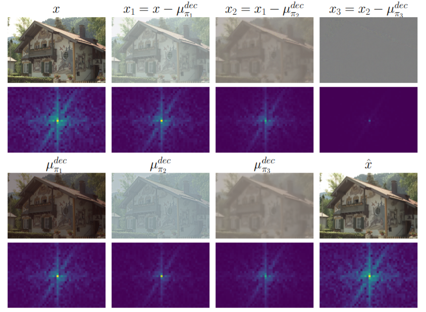 ANFIC: Image Compression Using Augmented
Normalizing Flows
IEEE Open Journal of Circuits and Systems, Dec. 2021.
|
|
This paper introduces an end-to-end learned image compression system, termed
ANFIC, based on Augmented Normalizing Flows (ANF). ANF is a new type of flow
model, which stacks multiple variational autoencoders (VAE) for greater model
expressiveness. The VAE-based image compression has gone mainstream, showing
promising compression performance. Our work presents the first attempt to
leverage VAE-based compression in a flow-based framework. ANFIC advances further
compression efficiency by stacking and extending hierarchically multiple VAE's.
The invertibility of ANF, together with our training strategies, enables ANFIC
to support a wide range of quality levels without changing the encoding and
decoding networks. Extensive experimental results show that in terms of
PSNR-RGB, ANFIC performs comparably to or better than the state-of-the-art
learned image compression. Moreover, it performs close to VVC intra coding, from
low-rate compression up to perceptually lossless compression. In particular,
ANFIC achieves the state-of-the-art performance, when extended with conditional
convolution for variable rate compression with a single model. The source code
of ANFIC can be found
at https://github.com/dororojames/ANFIC.
|
|
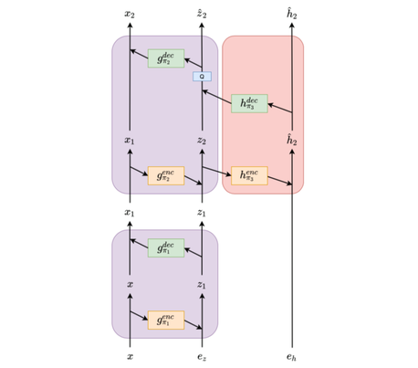 End-to-End Learned Image Compression with
Augmented Normalizing Flows
IEEE Conference on Computer Vision and Pattern
Recognition (CVPR) Workshops, Jun. 2021.
|
|
This paper presents a new attempt at using augmented normalizing flows (ANF) for
lossy image compression. ANF is a specific type of normalizing flow models that
augment the input with an independent noise, allowing a smoother transformation
from the augmented input space to the latent space. Inspired by the fact that
ANF can offer greater expressivity by stacking multiple variational autoencoders
(VAE), we generalize the popular VAE-based compression framework by the
autoencoding transforms of ANF. When evaluated on Kodak dataset, our ANF-based
model provides 3.4% higher BD-rate saving as compared with a VAE-based baseline
that implements hyper-prior with mean prediction. Interestingly, it benefits
even more from the incorporation of a post-processing network, showing 11.8%
rate saving as compared to 6.0% with the baseline plus post-processing.
|
|
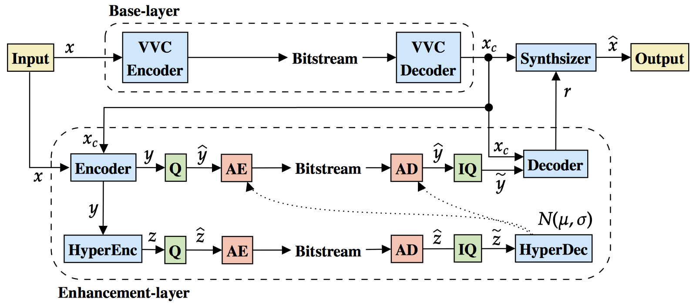 A Hybrid Layered Image Compressor with Deep-Learning
Technique
IEEE International Workshop on Multimedia Signal
Processing (MMSP), Sep. 2020.
|
|
The proposed compression system features a VVC intra codec as the base layer and
a learning-based residual codec as the enhancement layer. The latter aims to
refine the quality of the base layer via sending a latent residual signal. In
particular, a base-layer-guided attention module is employed to focus the
residual extraction on critical high-frequency areas. To reconstruct the image,
this latent residual signal is combined with the base-layer output in a
non-linear fashion by a neural-network-based synthesizer. The proposed method
shows comparable rate-distortion performance to single-layer VVC intra in terms
of common objective metrics, but presents better subjective quality particularly
at high compression ratios in some cases. It consistently outperforms HEVC
intra, JPEG 2000, and JPEG. The proposed system incurs 18M network parameters in
16-bit floating-point format. On average, the encoding of an image on Intel Xeon
Gold 6154 takes about 13.5 minutes, with the VVC base layer dominating the
encoding runtime. On the contrary, the decoding is dominated by the residual
decoder and the synthesizer, requiring 31 seconds per image.
|
|
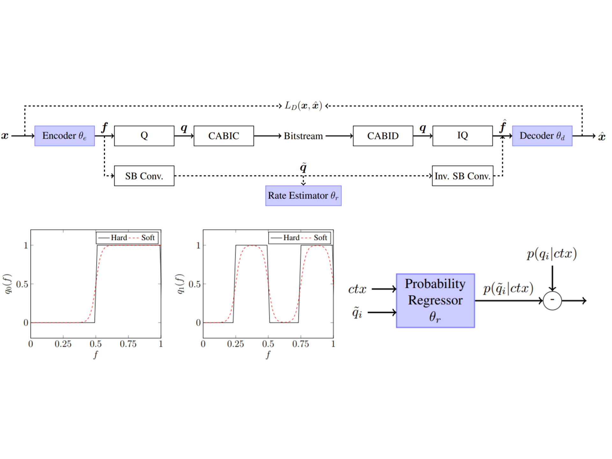 Learned Image Compression With Soft Bit-based
Rate-distortion Optimization
IEEE International Conference on Image Processing (ICIP),
Oct. 2019.
|
|
This paper introduces the notion of soft bits to address the
rate-distortion optimization for learning-based image compression.
Recent methods for such compression train an autoencoder
end-to-end with an objective to strike a balance between
distortion and rate. They are faced with the zero gradient
issue due to quantization and the difficulty of estimating
the rate accurately. Inspired by soft quantization, we represent
quantization indices of feature maps with differentiable
soft bits. This allows us to couple tightly the rate estimation
with context-adaptive binary arithmetic coding. It also
provides a differentiable distortion objective function. Experimental
results show that our approach achieves the state-ofthe-
art compression performance among the learning-based
schemes in terms of MS-SSIM and PSNR.
|
|
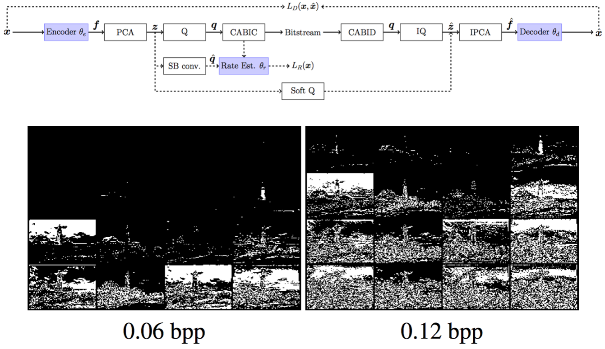 An Autoencoder-based Image Compressor with Principle
Component Analysis and Soft-Bit Rate Estimation
IEEE Conference on Computer Vision and Pattern
Recognition (CVPR) Workshops, Jun. 2019.
|
|
We propose a lossy image compression system using the
deep-learning autoencoder structure to participate in the
Challenge on Learned Image Compression (CLIC) 2018.
Our autoencoder uses the residual blocks with skip connections to reduce the
correlation among image pixels and condense the input image into a set of
feature maps, a compact
representation of the original image. The bit allocation and
bitrate control are implemented by using the importance
maps and quantizer. The importance maps are generated
by a separate neural net in the encoder. The autoencoder
and the importance net are trained jointly based on minimizing a weighted sum of
mean squared error, MS-SSIM,
and a rate estimate. Our aim is to produce reconstructed
images with good subjective quality subject to the 0.15 bitsper-pixel
constraint.
|
|
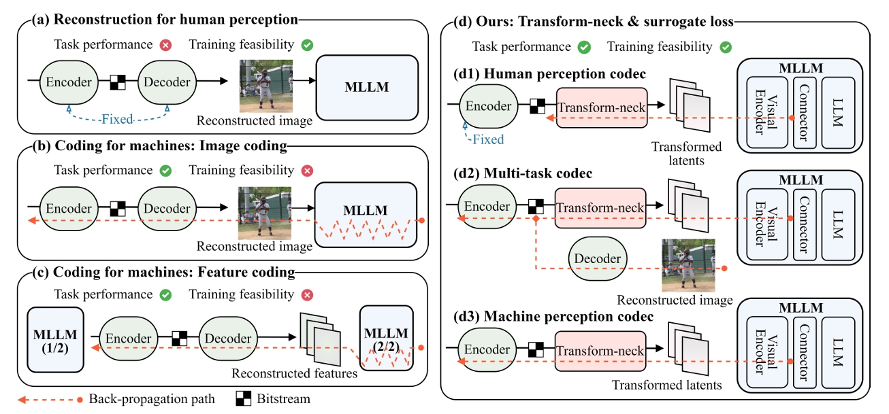 Bridging Compressed Image Latents and Multimodal Large Language Models
International Conference on Learning Representations (ICLR), Apr. 2025.
|
|
This paper presents the first-ever study of adapting compressed image latents to suit the needs of downstream vision tasks that adopt Multimodal Large Language Models (MLLMs). MLLMs have extended the success of large language models to modalities (e.g. images) beyond text, but their billion scale hinders deployment on resource-constrained end devices. While cloud-hosted MLLMs could be available, transmitting raw, uncompressed images captured by end devices to the cloud requires an efficient image compression system. To address this, we focus on emerging neural image compression and propose a novel framework with a lightweight transform-neck and a surrogate loss to adapt compressed image latents for MLLM-based vision tasks. Given the huge scale of MLLMs, our framework excludes the entire downstream MLLM except part of its visual encoder from training our system. This stands out from most existing coding for machine approaches that involve downstream networks in training and thus could be impractical when the networks are MLLMs. The proposed framework is general in that it is applicable to various MLLMs, neural image codecs, and multiple application scenarios, where the neural image codec can be (1) pre-trained for human perception without updating, (2) fully updated for joint human and machine perception, or (3) fully updated for only machine perception. Extensive experiments on different neural image codecs and various MLLMs show that our method achieves great rate-accuracy performance with much less complexity.
|
|
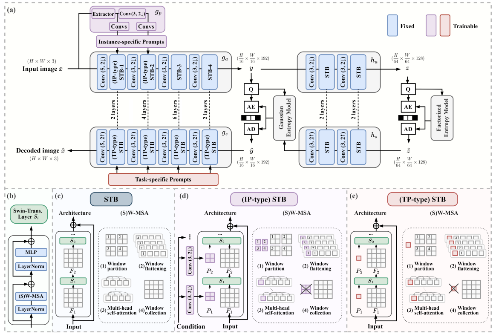 TransTIC: Transferring Transformer-based Image Compression
from Human Perception to Machine Perception
IEEE International Conference on Computer Vision (ICCV), Oct. 2023.
|
|
This work aims for transferring a Transformer-based image compression codec
from human perception to machine perception without fine-tuning the codec.
We propose a transferable Transformer-based image compression framework,
termed TransTIC. Inspired by visual prompt tuning, TransTIC adopts an
instance-specific prompt generator to inject instance-specific prompts to
the encoder and task-specific prompts to the decoder. Extensive experiments
show that our proposed method is capable of transferring the base codec to
various machine tasks and outperforms the competing methods significantly.
To our best knowledge, this work is the first attempt to utilize prompting
on the low-level image compression task.
|
|
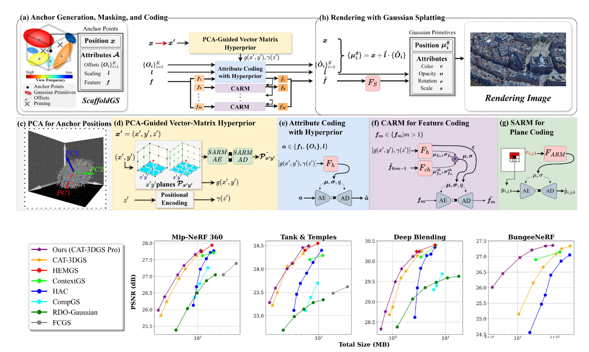 CAT-3DGS Pro: A New Benchmark for Efficient 3DGS Compression
European Signal Processing Conference (EUSIPCO), Sep. 2025
|
|
3D Gaussian Splatting (3DGS) has shown immense potential for novel view synthesis. However, achieving rate-distortion-optimized compression of 3DGS representations for transmission and/or storage applications remains a challenge.
CAT-3DGS introduces a context-adaptive triplane hyperprior for end-to-end optimized compression, delivering state-of-the-art coding performance.
Despite this, it requires prolonged training and decoding time. To address these limitations, we propose CAT-3DGS Pro, an enhanced version of CAT-3DGS that improves both compression performance and computational efficiency.
First, we introduce a PCA-guided vector-matrix hyperprior, which replaces the triplane-based hyperprior to reduce redundant parameters.
To achieve a more balanced rate-distortion trade-off and faster encoding, we propose an alternate optimization strategy (A-RDO).
Additionally, we refine the sampling rate optimization method in CAT-3DGS, leading to significant improvements in rate-distortion performance.
These enhancements result in a 46.6% BD-rate reduction and 3x speedup in training time on BungeeNeRF, while achieving 5x acceleration in decoding speed for the Amsterdam scene compared to CAT-3DGS.
|
|
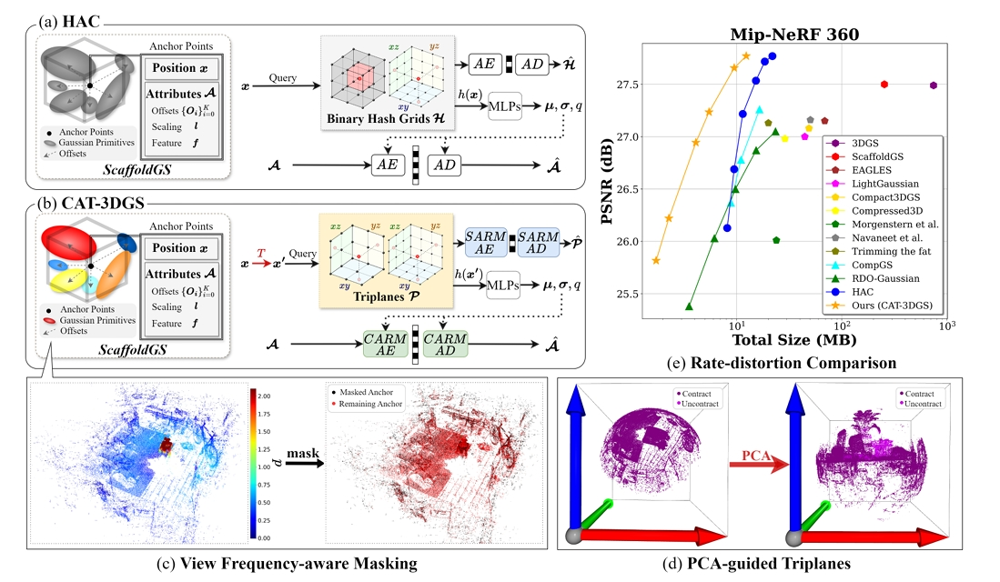 CAT-3DGS: A Context-Adaptive Triplane Approach to Rate-Distortion-Optimized 3DGS Compression
International Conference on Learning Representations (ICLR), Apr. 2025.
|
|
3D Gaussian Splatting (3DGS) has recently emerged as a promising 3D representation. Much research has been focused on reducing its storage requirements and memory footprint. However, the needs to compress and transmit the 3DGS representation to the remote side are overlooked. This new application calls for rate-distortion-optimized 3DGS compression. How to quantize and entropy encode sparse Gaussian primitives in the 3D space remains largely unexplored. Few early attempts resort to the hyperprior framework from learned image compression. But, they fail to utilize fully the inter and intra correlation inherent in Gaussian primitives. Built on ScaffoldGS, this work, termed CAT-3DGS, introduces a context-adaptive triplane approach to their rate-distortion-optimized coding. It features multi-scale triplanes, oriented according to the principal axes of Gaussian primitives in the 3D space, to capture their inter correlation (i.e. spatial correlation) for spatial autoregressive coding in the projected 2D planes. With these triplanes serving as the hyperprior, we further perform channel-wise autoregressive coding to leverage the intra correlation within each individual Gaussian primitive. Our CAT-3DGS incorporates a view frequency-aware masking mechanism. It actively skips from coding those Gaussian primitives that potentially have little impact on the rendering quality. When trained end-to-end to strike a good rate-distortion trade-off, our CAT-3DGS achieves the state-of-the-art compression performance on the commonly used real-world datasets.
|
|
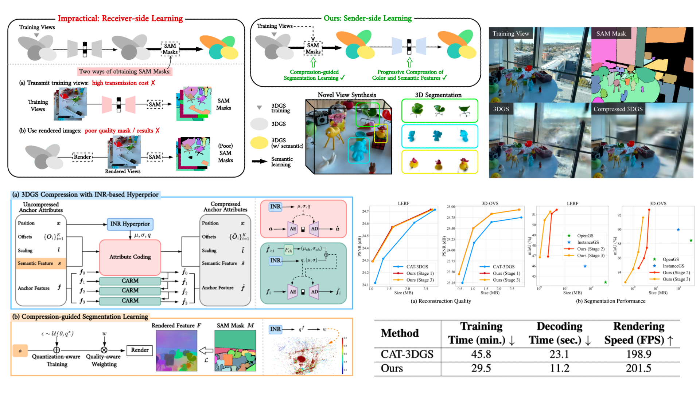 CSGaussian: Progressive Rate-Distortion Compression and
Segmentation for 3D Gaussian Splatting
IEEE Winter Conference on Applications of Computer Vision
(WACV), Mar. 2026.
|
|
We present the first unified framework for rate-distortion-optimized compression and segmentation of 3D Gaussian Splatting (3DGS). While 3DGS has proven effective for both real-time rendering and semantic scene understanding, prior works have largely treated these tasks independently, leaving their joint consideration unexplored. Inspired by recent advances in rate-distortion-optimized 3DGS compression, this work integrates semantic learning into the compression pipeline to support decoder-side applications–such as scene editing and manipulation–that extend beyond traditional scene reconstruction and view synthesis. Our scheme features a lightweight implicit neural representation-based hyperprior, enabling efficient entropy coding of both color and semantic attributes while avoiding costly grid-based hyperprior as seen in many prior works. To facilitate compression and segmentation, we further develop compression-guided segmentation learning, consisting of quantization-aware training to enhance feature separability and a quality-aware weighting mechanism to suppress unreliable Gaussian primitives. Extensive experiments on the LERF and 3D-OVS datasets demonstrate that our approach significantly reduces transmission cost while preserving high rendering quality and strong segmentation performance.
|
|
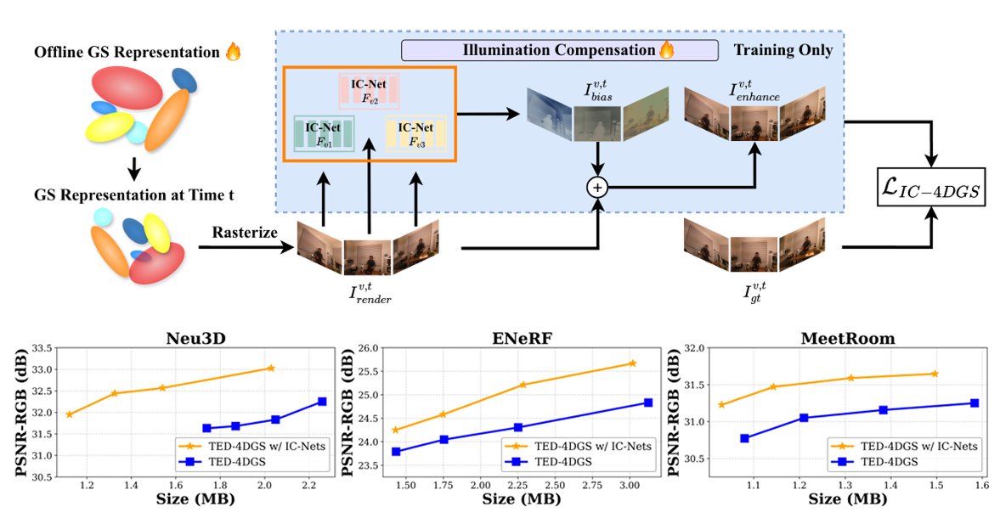
IC-4DGS: Illumination-Compensated 4D Gaussian Splatting under Photometric Variations
IEEE International Conference on Image Processing (ICIP), Sep. 2026.
|
|
Dynamic Gaussian Splatting (often known as 4DGS) is emerging as
a promising technique for representing real-world dynamic scenes.
However, 4DGS representations are susceptible to photometric vari
ations caused by exposure and white balance shifts inherent to phys
ical cameras. These cross-view inconsistencies degrade rendering
quality and destabilize training because the resulting 4DGS repre
sentation risks overfitting to view- and content-dependent photomet
ric artifacts. To address this challenge in the offline setting, we in
troduce IC-4DGS, a plug-and-play framework with view-dependent
illumination-compensated networks (IC-Nets) that disentangle pho
tometric artifacts from the offline 4DGS representation, enabling sta
ble optimization and compact, high-fidelity 4DGS models. Exten
sive experiments show that IC-4DGS is effective and broadly appli
cable across diverse offline 4DGS representations, consistently im
proving rendering quality without altering core optimization proce
dures.
|
|
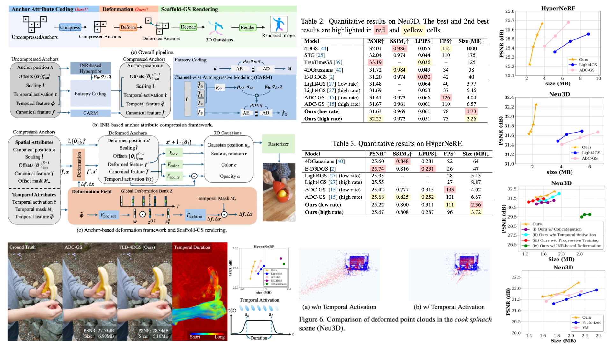 TED-4DGS: Temporally Activated and Embedding-based Deformation for 4DGS Compression
IEEE Winter Conference on Applications of Computer Vision
(WACV), Mar. 2026.
|
|
Building on the success of 3D Gaussian Splatting (3DGS) in static 3D scene representation, its extension to dynamic scenes, commonly referred to as 4DGS or dynamic 3DGS, has attracted increasing attention. However, designing more compact and efficient deformation schemes together with rate-distortion-optimized compression strategies for dynamic 3DGS representations remains an underexplored area. Prior methods either rely on space-time 4DGS with overspecified, short-lived Gaussian primitives or on canonical 3DGS with deformation that lacks explicit temporal control. To address this, we present TED-4DGS, a temporally activated and embedding-based deformation scheme for rate-distortion-optimized 4DGS compression that unifies the strengths of both families. TED-4DGS is built on a sparse anchor-based 3DGS representation. Each canonical anchor is assigned learnable temporal-activation parameters to specify its appearance and disappearance transitions over time, while a lightweight per-anchor temporal embedding queries a shared deformation bank to produce anchor-specific deformation. For rate-distortion compression, we incorporate an implicit neural representation (INR)-based hyperprior to model anchor attribute distributions, along with a channel-wise autoregressive model to capture intra-anchor correlations. With these novel elements, our scheme achieves state-of-the-art rate-distortion performance on several real-world datasets. To the best of our knowledge, this work represents one of the first attempts to pursue a rate-distortion-optimized compression framework for dynamic 3DGS representations.
|
|
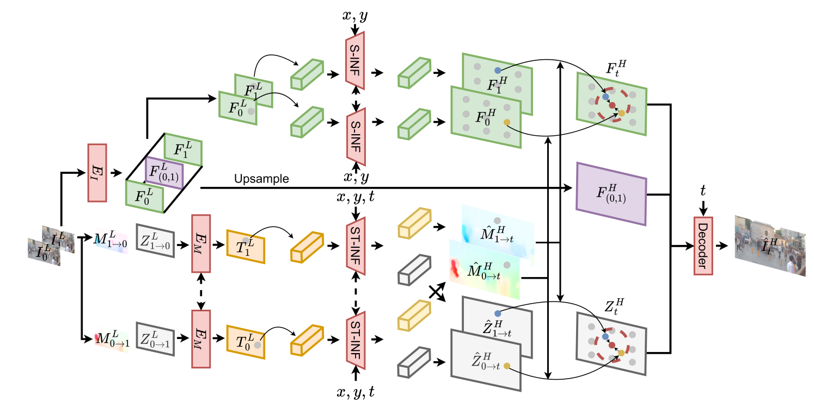 MoTIF: Learning Motion Trajectories with Local Implicit Neural
Functions for Continuous Space-Time Video Super-Resolution
IEEE International Conference
on Computer Vision (ICCV), Oct. 2023.
|
|
This work addresses continuous space-time video super-resolution (C-STVSR) that
aims to up-scale an input video both spatially and temporally by any scaling
factors. One key challenge of C-STVSR is to propagate information temporally
among the input video frames. To this end, we introduce a space-time local
implicit neural function. It has the striking feature of learning forward motion
for a continuum of pixels. We motivate the use of forward motion from the
perspective of learning individual motion trajectories, as opposed to learning a
mixture of motion trajectories with backward motion. To ease motion interpolation,
we encode sparsely sampled forward motion extracted from the input video as the
contextual input. Along with a reliability-aware splatting and decoding scheme,
our framework, termed MoTIF, achieves the state-of-the-art performance on C-STVSR.
|
|
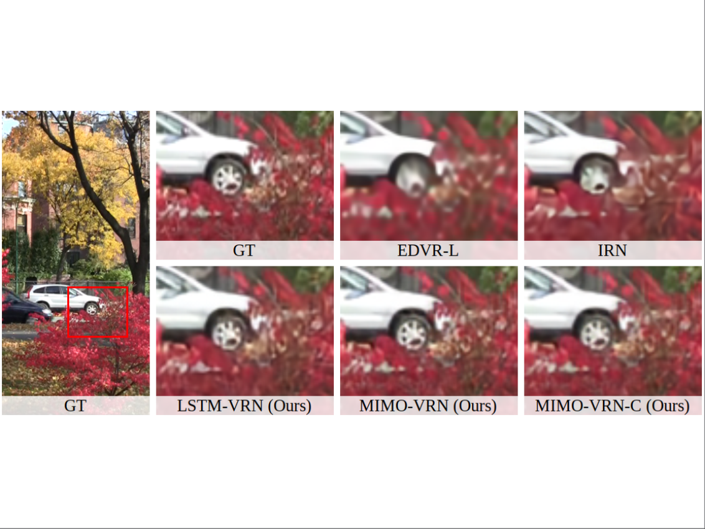 Video Rescaling Networks with Joint Optimization
Strategies for Downscaling and Upscaling
IEEE Conference on Computer Vision and Pattern
Recognition (CVPR), June 2021.
|
|
This paper addresses the video rescaling task, which arises from the needs of
adapting the video spatial resolution to
suit individual viewing devices. We aim to jointly optimize video downscaling
and upscaling as a combined task. Most recent
studies focus on image-based solutions, which do not consider temporal
information. We present two joint optimization
approaches based on invertible neural networks with coupling layers. Our Long
Short-Term Memory Video Rescaling Network
(LSTM-VRN) leverages temporal information in the low-resolution video to form an
explicit prediction of the missing
high-frequency information for upscaling. Our Multi-input Multi-output Video
Rescaling Network (MIMO-VRN) proposes a new
strategy for downscaling and upscaling a group of video frames simultaneously.
Not only do they outperform the image-based
invertible model in terms of quantitative and qualitative results, but also show
much improved upscaling quality than the
video rescaling methods without joint optimization. To our best knowledge, this
work is the first attempt at the joint optimization
of video downscaling and upscaling.
|
|
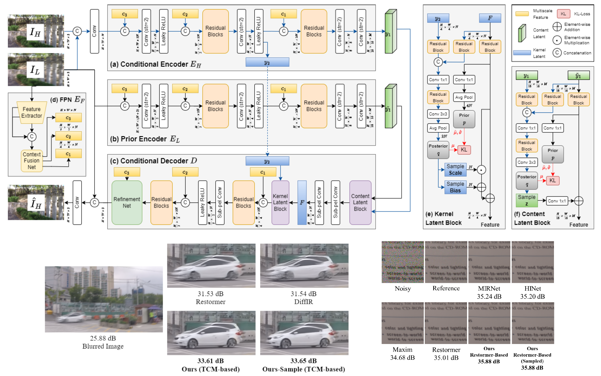 Using Conditional Video Compressors for Image Restoration
International Conference on Wireless and Optical Communications (WOCC), Oct. 2024.
|
|
To address the ill-posed nature of image restoration
tasks, recent research efforts have been focused on integrating
conditional generative models, such as conditional variational
autoencoders (CVAE). However, how to condition the autoencoder
to maximize the conditional evidence lower bound remains an
open issue, particularly for the restoration tasks. Inspired by the
rapid advancements in CVAE-based video compression, we make
the first attempt to adapt a conditional video compressor for
image restoration. In doing so, we have the low-quality image to
be enhanced, which plays the same role as the reference frame for
conditional video coding. Our scheme applies scalar quantization
in training the autoencoder, circumventing the difficulties of
training a large-size codebook as with prior works that adopt
vector-quantized VAE (VQ-VAE). Moreover, it trains end-to-end
a fully conditioned autoencoder, including a conditional encoder, a
conditional decoder, and a conditional prior network, to maximize
the conditional evidence lower bound. Extensive experiments
confirm the superiority of our scheme on denoising and deblurring
tasks.
|
|
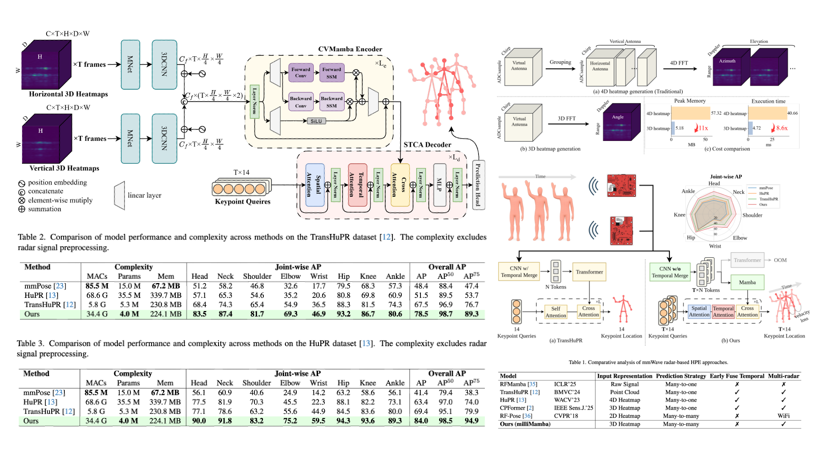 milliMamba: Specular-Aware Human Pose Estimation via
Dual mmWave Radar with Multi-Frame Mamba Fusion
IEEE Winter Conference on Applications of Computer Vision
(WACV), Mar. 2026.
|
|
Millimeter-wave radar offers a privacy-preserving and lighting-invariant alternative to RGB
sensors for Human Pose Estimation (HPE) task. However, the radar signals are often sparse due
to specular reflection, making the extraction of robust features from radar signals highly challenging.
To address this, we present milliMamba, a radar-based 2D human pose estimation framework that jointly
models spatio-temporal dependencies across both the feature extraction and decoding stages.
Specifically, given the high dimensionality of radar inputs, we adopt a Cross-View Fusion Mamba encoder
to efficiently extract spatio-temporal features from longer sequences with linear complexity.
A Spatio-Temporal-Cross Attention decoder then predicts joint coordinates across multiple frames.
Together, this spatio-temporal modeling pipeline enables the model to leverage contextual cues from
neighboring frames and joints to infer missing joints caused by specular reflections. To reinforce motion
smoothness, we incorporate a velocity loss alongside the standard keypoint loss during training.
Experiments on the TransHuPR and HuPR datasets demonstrate that our method achieves significant performance
improvements, exceeding the baselines by 11.0 AP and 14.6 AP, respectively, while maintaining reasonable complexity.
Code: this https URL
|
|
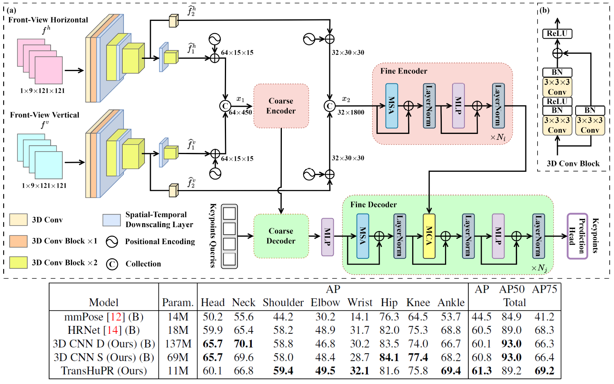 TransHuPR: Cross-View Fusion Transformer for
Human Pose Estimation Using mmWave Radar
British Machine Vision Conference (BMVC), Nov. 2024.
|
|
We present a novel Cross-View Fusion Transformer for Human Pose Estimation
task based on mmWave Radar (TransHuPR). It is an mmWave Radar-based 2D Human
Pose Estimation (HPE). Our work incorporates a 2D front projection view of
the 3D pointcloud representation of the radar data as an input modality. The
fusion transformer effectively fuses features derived from 2D front projection
views of 2 independent radars and delivers high-quality predictions of human
pose keypoints. We also introduce a new dataset consisting of fast actions
with high frame rates as continuous radar sequences. Unlike other publicly
available datasets, our dataset stands out because of its size, which ensures
good generalization. We also incorporate singleaction and mixed-action sequences,
making the dataset more challenging. We use a non-expensive multi-radar system,
which can be easily replicated. Our proposed method demonstrates significant
improvements over existing methods in terms of both average precision scores
and qualitative analysis. The dataset and code are available
at https://github.com/nirajpkini/TransHuPR
|
|
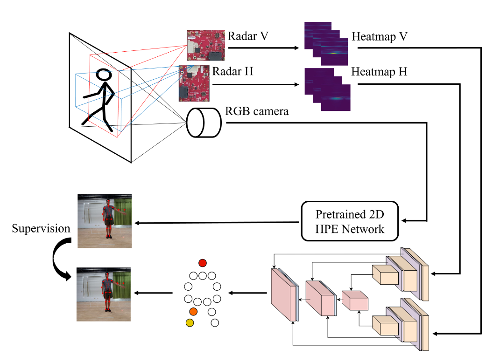 HuPR: A Benchmark for Human Pose Estimation
Using Millimeter Wave Radar
IEEE Winter Conference on Applications of Computer Vision
(WACV), Jan. 2023.
|
|
This paper introduces a novel human pose estimation benchmark, Human Pose with
Millimeter Wave Radar (HuPR), that includes synchronized vision and radio signal
components. This dataset is created using cross-calibrated mmWave radar sensors and
a monocular RGB camera for cross-modality training of radar-based human pose
estimation. In addition to the benchmark, we propose a cross-modality training
framework that leverages the ground-truth 2D keypoints representing human body
joints for training, which are systematically generated from the pre-trained 2D pose
estimation network based on a monocular camera input image, avoiding laborious
manual label annotation efforts. Our intensive experiments on the HuPR benchmark
show that the proposed scheme achieves better human pose estimation performance with
only radar data, as compared to traditional pre-processing solutions and previous
radio-frequency-based methods.
|
|
Neural Frank-Wolfe Policy Optimization for
Region-of-Interest Intra-Frame Coding with HEVC/H.265
IEEE International Conference on Visual Communications and Image Processing (VCIP),
Dec. 2022.
|
|
This paper presents a reinforcement learning (RL) framework that utilizes
Frank-Wolfe policy optimization to solve Coding-Tree-Unit (CTU) bit allocation
for Region-of-Interest (ROI) intra-frame coding. Most previous RL-based methods
employ the single-critic design, where the rewards for distortion minimization
and rate regularization are weighted by an empirically chosen hyper-parameter.
Recently, the dual-critic design is proposed to update the actor by alternating
the rate and distortion critics. However, its convergence is not guaranteed. To
address these issues, we introduce Neural Frank-Wolfe Policy Optimization
(NFWPO) in formulating the CTU-level bit allocation as an action-constrained RL
problem. In this new framework, we exploit a rate critic to predict a feasible
set of actions. With this feasible set, a distortion critic is invoked to update
the actor to maximize the ROI-weighted image quality subject to a rate
constraint. Experimental results produced with x265 confirm the superiority of
the proposed method to the other baselines.
|
|
A Dual-Critic Reinforcement Learning
Framework for Frame-level Bit Allocation in HEVC/H.265
Data Compression Conference (DCC), Mar. 2021.
|
|
This paper introduces a dual-critic reinforcement learning (RL) framework to
address the problem of frame-level bit allocation in HEVC/H.265. The objective
is to minimize the distortion of a group of pictures (GOP) under a rate
constraint. Previous RL-based methods tackle such a constrained optimization
problem by maximizing a single reward function that often combines a distortion
and a rate reward. However, the way how these rewards are combined is usually ad
hoc and may not generalize well to various coding conditions and video
sequences. To overcome this issue, we adapt the deep deterministic policy
gradient (DDPG) reinforcement learning algorithm for use with two critics, with
one learning to predict the distortion reward and the other the rate reward. In
particular, the distortion critic works to update the agent when the rate
constraint is satisfied. By contrast, the rate critic makes the rate constraint
a priority when the agent goes over the bit budget. Experimental results on
commonly used datasets show that our method outperforms the bit allocation
scheme in x265 and the single-critic baseline by a significant margin in terms
of rate-distortion performance while offering fairly precise rate control.
|
|
Reinforcement Learning for HEVC/H.265 Intra-Frame Rate
Control
IEEE International Symposium on Circuits and Systems
(ISCAS), May 2018.
|
|
Reinforcement learning has proven effective for solving decision making
problems. However, its application to modern video codecs has yet to be
seen. This paper presents an early attempt to introduce reinforcement
learning to HEVC/H.265 intra-frame rate control. The task is to determine
a quantization parameter value for every coding tree unit in a frame,
with the objective being to minimize the frame-level distortion subject
to a rate constraint. We draw an analogy between the rate control problem
and the reinforcement learning problem, by considering the texture complexity
of coding tree units and bit balance as the environment state, the
quantization parameter value as an action that an agent needs to take,
and the negative distortion of the coding tree unit as an immediate reward.
We train a neural network based on Q-learning to be our agent, which
observes the state to evaluate the reward for each possible action. When
trained on only limited sequences, the proposed model can already perform
comparably with the rate control algorithm in HM-16.15.
|
|
Reinforcement Learning for HEVC/H.265 Frame-level Bit
Allocation
IEEE International Conference on Digital Signal
Processing (DSP), Nov. 2018.
|
|
Frame-level bit allocation is crucial to video rate control.
The problem is often cast as minimizing the distortions of a
group of video frames subjective to a rate constraint.
When these video frames are related through inter-frame
prediction, the bit allocation for different frames exhibits
dependency. To address such dependency, this paper introduces
reinforcement learning. We first consider frame-level texture
complexity and bit balance as a state signal, define the bit
allocation for each frame as an action, and compute the negative
frame-level distortion as an immediate reward signal. We then train
a neural network to be our agent, which observes the state to
allocate bits to each frame in order to maximize cumulative reward.
As compared to the rate control scheme in HM-16.15, our method shows
better PSNR performance while having smaller bit rate fluctuations.
|
|
HEVC/H.265 Coding Unit Split Decision Using Deep
Reinforcement Learning
IEEE International Symposium on Intelligent Signal
Processing and Communication Systems (ISPACS), Nov. 2017.
|
|
The video coding community has long been seeking more effective
rate-distortion optimization techniques than the widely adopted
greedy approach. The difficulty arises when we need to predict how
the coding mode decision made in one stage would affect subsequent
decisions and thus the overall coding performance. Taking a data-driven
approach, we introduce in this paper deep reinforcement learning (RL)
as a mechanism for the coding unit (CU) split decision in HEVC/H.265.
We propose to regard the luminance samples of a CU together with the
quantization parameter as its state, the split decision as an action,
and the reduction in ratedistortion cost relative to keeping the current
CU intact as the immediate reward. Based on the Q-learning algorithm,
we learn a convolutional neural network to approximate the ratedistortion
cost reduction of each possible state-action pair. The proposed scheme
performs compatibly with the current full rate-distortion optimization
scheme in HM-16.15, incurring a 2.5% average BD-rate loss. While also
performing similarly to a conventional scheme that treats the split
decision as a binary classification problem, our scheme can additionally
quantify the rate-distortion cost reduction, enabling more applications.
|
|
Deep Video Prediction Through Sparse Motion
Regularization
IEEE International Conference on Image Processing (ICIP),
Oct. 2020.
|
|
This paper leverages a classic prediction technique,
known as parametric overlapped block motion compensation (POBMC), in a
reinforcement learning framework for
video prediction. Learning-based prediction methods with
explicit motion models often suffer from having to estimate
large numbers of motion parameters with artificial regularization. Inspired by
the success of sparse motion-based
prediction for video compression, we propose a parametric video prediction on a
sparse motion field composed of
few critical pixels and their motion vectors. The prediction
is achieved by gradually refining the estimate of a future
frame in iterative, discrete steps. Along the way, the identification of
critical pixels and their motion estimation are addressed by two neural networks
trained under a reinforcement learning setting. Our model achieves the
state-of-theart performance on CaltchPed, UCF101 and CIF datasets
in one-step and multi-step prediction tests. It shows good
generalization results and is able to learn well on small
training data
|
|
SME-Net: Sparse Motion Estimation for Parametric Video
Prediction through Reinforcement Learning
IEEE International Conference on Computer Vision (ICCV),
Oct. 2019.
|
|
This paper leverages a classic prediction technique,
known as parametric overlapped block motion compensation (POBMC), in a
reinforcement learning framework for
video prediction. Learning-based prediction methods with
explicit motion models often suffer from having to estimate
large numbers of motion parameters with artificial regularization. Inspired by
the success of sparse motion-based
prediction for video compression, we propose a parametric video prediction on a
sparse motion field composed of
few critical pixels and their motion vectors. The prediction
is achieved by gradually refining the estimate of a future
frame in iterative, discrete steps. Along the way, the identification of
critical pixels and their motion estimation are addressed by two neural networks
trained under a reinforcement learning setting. Our model achieves the
state-of-theart performance on CaltchPed, UCF101 and CIF datasets
in one-step and multi-step prediction tests. It shows good
generalization results and is able to learn well on small
training data.
|
|
All about Structure: Adapting Structural Information
across Domains for Boosting Semantic Segmentation
IEEE Computer Society Conference on Computer Vision and
Pattern Recognition (CVPR), June 2019.
|
|
In this paper we tackle the problem of unsupervised
domain adaptation for the task of semantic segmentation,
where we attempt to transfer the knowledge learned upon
synthetic datasets with ground-truth labels to real-world
images without any annotation. With the hypothesis that
the structural content of images is the most informative and
decisive factor to semantic segmentation and can be readily shared across
domains, we propose a Domain Invariant
Structure Extraction (DISE) framework to disentangle images into
domain-invariant structure and domain-specific
texture representations, which can further realize imagetranslation across
domains and enable label transfer to improve segmentation performance. Extensive
experiments
verify the effectiveness of our proposed DISE model and
demonstrate its superiority over several state-of-the-art approaches.
|
|
GSVNet: Guided Spatially-Varying Convolution for
Fast Semantic Segmentation on Video
IEEE International Conference on Multimedia and Expo
(ICME), July 2021.
|
|
This paper addresses fast semantic segmentation on video.
Video segmentation often calls for real-time, or even faster
than real-time, processing. One common recipe for conserving
computation arising from feature extraction is to propagate
features of few selected keyframes. However, recent advances
in fast image segmentation make these solutions less
attractive. To leverage fast image segmentation for furthering
video segmentation, we propose a simple yet efficient propagation
framework. Specifically, we perform lightweight flow
estimation in 1/8-downscaled image space for temporal warping
in segmentation outpace space. Moreover, we introduce
a guided spatially-varying convolution for fusing segmentations
derived from the previous and current frames, to mitigate
propagation error and enable lightweight feature extraction
on non-keyframes. Experimental results on Cityscapes
and CamVid show that our scheme achieves the state-of-the-art
accuracy-throughput trade-off on video segmentation.
|

Weakly-Supervised Image Semantic Segmentation
Using Graph Convolutional Networks
IEEE International Conference on Multimedia and Expo
(ICME), July 2021.
|
|
This work addresses weakly-supervised image semantic seg-mentation
based on image-level class labels. One commonapproach to this task
is to propagate the activation scores ofClass Activation Maps (CAMs)
using a random-walk mecha-nism in order to arrive at complete pseudo
labels for traininga semantic segmentation network in a fully-supervised
man-ner. However, the feed-forward nature of the random walkimposes
no regularization on the quality of the resulting com-plete pseudo labels.
To overcome this issue, we propose aGraph Convolutional Network
(GCN)-based feature propaga-tion framework. We formulate the
generation of completepseudo labels as a semi-supervised learning
task and learna 2-layer GCN separately for every training image by
back-propagating a Laplacian and an entropy regularization loss.Experimental
results on the PASCAL VOC 2012 dataset con-firm the superiority of our
scheme to several state-of-the-artbaselines.Index Terms?�Weakly-supervised
image semantic seg-mentation, Graph Convolutional Networks
|
|
Semantic Segmentation on Compressed Video Using Block
Motion Compensation and Guided Inpainting
IEEE International Symposium on Circuits and Systems
(ISCAS), Oct 2020.
|
|
This paper addresses the problem of fast semantic segmentation on compressed
video.
Unlike most prior works for video segmentation, which perform feature
propagation based on optical flow estimates or sophisticated warping techniques,
ours takes advantage of block motion vectors in the compressed bitstream to
propagate the segmentation of a keyframe to subsequent non-keyframes.
This approach, however, needs to respect the inter-frame prediction structure,
which often suggests recursive, multi-step prediction with error propagation and
accumulation in the temporal dimension. To tackle the issue,
we refine the motion-compensated segmentation using inpainting. Our inpainting
network incorporates guided non-local attention for long-range reference and
pixel-adaptive convolution for ensuring the local coherence of the segmentation.
A fusion step then follows to combine both the motion-compensated and inpainted
segmentations.
Experimental results show that our method outperforms the state-of-the-art
baselines in terms of segmentation accuracy.
Moreover, it introduces the least amount of network parameters and multiply-add
operations for non-keyframe segmentation.
|
|
Class-incremental Learning with Rectified Feature-Graph
Preservation
Asian Conference on Computer Vision (ACCV), Nov.
2020.
|
|
In this paper, we address the problem of distillation-based class-incremental
learning with a single head. A central theme
of this task is to learn new classes that arrive in sequential phases over time
while keeping the model's capability of
recognizing seen classes with only limited memory for preserving seen data
samples. Many regularization strategies have
been proposed to mitigate the phenomenon of catastrophic forgetting. To
understand better the essence of these
regularizations, we introduce a feature-graph preservation perspective. Insights
into their merits and faults motivate our
weighted-Euclidean regularization for old knowledge preservation. We further
propose rectified cosine normalization and show
how it can work with binary cross-entropy to increase class separation for
effective learning of new classes. Experimental
results on both CIFAR-100 and ImageNet datasets demonstrate that our method
outperforms the state-of-the-art approaches in
reducing classification error, easing catastrophic forgetting, and encouraging
evenly balanced accuracy over different classes.
|
|
Learning Goal-oriented Visual Dialogue: Imitating and
Surpassing Analytic Experts
IEEE International Conference on Multimedia and Expo
(ICME), July 2019.
|
|
This paper tackles the problem of learning a questioner in
the goal-oriented visual dialog task. Several previous works
adopt model-free reinforcement learning. Most pretrain the
model from a finite set of human-generated data. We argue
that using limited demonstrations to kick-start the questioner
is insufficient due to the large policy search space. Inspired
by a recently proposed information theoretic approach, we
develop two analytic experts to serve as a source of highquality demonstrations
for imitation learning. We then take
advantage of reinforcement learning to refine the model towards the
goal-oriented objective. Experimental results on the
GuessWhat?! dataset show that our method has the combined
merits of imitation and reinforcement learning, achieving the
state-of-the-art performance.
|
|
Learning Priors for Adversarial Autoencoders
Asia-Pacific Signal and Information Processing
Association (APSIPA), Nov. 2018.
|
|
Most deep latent factor models choose simple priors for simplicity, tractability
or not knowing what prior to use. Recent
studies show that the choice of the prior may have a profound effect on the
expressiveness of the model, especially when
its generative network has limited capacity. In this paper, we propose to learn
a proper prior from data for adversarial
autoencoders (AAEs). We introduce the notion of code generators to transform
manually selected simple priors into ones
that can better characterize the data distribution. Experimental results show
that the proposed model can generate better
image quality and learn better disentangled representations than AAEs in both
supervised and unsupervised settings.
Lastly, we present its ability to do cross-domain translation in a text-to-image
synthesis task.
|
|
Learning to Fly with a Video Generator
IEEE International Conference on Visual Communications
and Image Processing (VCIP), Dec. 2021.
|
|
This paper demonstrates a model-based reinforcement learning framework for
training a self-flying drone.
We implement the Dreamer proposed in a prior work as an environment model that
responds to the action taken
by the drone by predicting the next video frame as a new state signal. The
Dreamer is a conditional video sequence generator.
This model-based environment avoids the time-consuming interactions between the
agent and the environment,
speeding up largely the training process. This demonstration showcases for the
first time the application of the
Dreamer to train an agent that can finish the racing task in the Airsim
simulator.
|